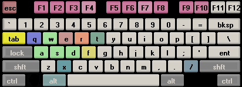
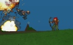
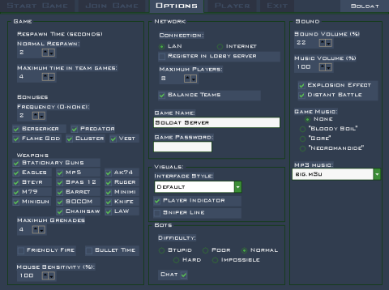
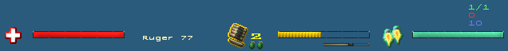
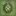
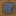

===-=-=-----
-----=-=-===

:=-==SOLDAT MANUAL (11.08.07 polski)==-=:
===-=-=-----
-----=-=-===
:=-==SOLDAT MANUAL (11.08.07 polski)==-=:
Index:
Wstep
Wymagania
Fabula
Start
Domyslne klawisze
Rodzaje gry
Opcje gry
Ekran gry
Bronie
Bonusy
Komendy
Chat
Serwer dedykowany
Ochrona ANTI-CHEAT
Historia wersji
Licencja i dystrybucja
Lista plac i inne
Kontakt
Rejestracja Soldat - informacje

:---===WSTEP:
Soldat to gleboko filozoficzna gra z ukrytym przeslaniem i mocno zarysowana fabula z elementami skomplikowanej intrygi oraz strategiczno-handlowa struktura, w ktorej wcielasz sie w postac Atylli wodza Hunow. Twoim zadaniem jest opanowanie kluczowych miejsc dla swiatowej finansiery. Zdobywasz nowe terytoria i podwladnych za pomoca specjalistycznych metod wyszukanej percepcji i skrupulatnemu badaniu wzrostu cen akcji. Aby potem gdy akcje beda wysokie sprzedac je! I pogromic swoich przeciwnikow, krolow finansow znajdujacych sie na rynku od 50 lat! Niech sie ciebie lekaja, gdyz to ty bedziesz mial caly swiat w garsci, kontrolujac ceny zboza i nakladajac sankcje na kraje trzeciego swiata! Bedziesz mial do dyspozycji najlepszych maklerow gieldowych, najdokladniejszych ksiegowych i kupe brudnego szmalu, ktory bedziesz inwestowac w lewe interesy - podziemne kasyna, walki psow, rozgrywki roskiej ruletki. Bedziesz musial stawic czolo nowym wyzwaniom i zeglowac posrod pomyslnych wiatrow, na cieplych pradach, szerokiego morza swiatowej finansiery, inwestycji, nieruchomosci, gieldy i ubezpieczen spolecznych ...A tak naprawde:
Soldat to gra czerpiaca najlepsze cechy z gier takich jak Liero, Worms, Quake i Counter-Strike. Jest to multiplayerowa strzelanina z szybka akcja i hektolitrami krwi, rozgrywajaca sie na dwuwymiarowych arenach. Kilkunastu graczy moze nawalac sie miedzy soba korzystajac z arsenalu wspolczesnej broni bojowej.

:---===WYMAGANIA:
Urzadzenia wejscia do translacji sygnalow mechanicznych pochodzacych z odnozy
chwytnych do jednostki centralnej, przetwarzajacej dane wejsciowe i odsylajace je do urzadzenia pokazujacego
zbitek pikseli za kawalkiem szkla. Oprocz tego organ przekazujacy impulsy swietlne z pikseli do centralnej
jednostki kory, interpretujacej widzialne obrazy. Czyli:
- Klawiatura, myszka, monitor, mozg
A dokladniej,
Minimalne wymagania:
- Procesor 333mhz
- Akcelerator obslugujacy Direct3D
- Karta graficzna kompatybilna z DirectX 8.1
- 32 MB RAM
- Troche MB miejsca na dysku
- Karta dzwiekowa
- Karta sieciowa, modem itp.
- Microsoft Windows 98/Me/2000/XP
- Microsoft DirectX 8.1

:---===FABULA:
Z duchem Quake'a, a wiec:
Jest paru gosci, ktorzy postanowali sie ponaparzac, a ty mozesz byc jednym z
nich.

Gra z komputerem (z botami).
Najlatwiej rozpoczac gre w ten sposob:
- Wybierz mape z menu MAPS po prawej
- Zaznacz pare komputerowych przeciwnikow z najdalszego menu BOTS po
prawej lub kilka losowych botow z pola RANDOM BOTS
- Kliknij na guzik START GAME
Gra sieciowa.
Jesli chcesz grac z innymi ludzmi przez siec musisz zdecydowac najpierw jak:
a) zakladasz gre i inni sie do ciebie podlaczaja
Wejdz w menu OPTIONS i w opcjach NETWORK
wybierz rodzaj polaczenia (Connection - LAN/Internet). Ustal maksymalna liczbe
graczy, ktorzy beda mogli sie do ciebie podlaczyc (Max Players - jesli masz slabe polaczenie z
internetem lepiej ustawic mniej graczy). Jesli chcesz grac przez internet gra
moze zarejestrowac sie (REGISTER IN LOBBY SERVERS) w serwerze lobby, tak aby inni gracze mogli cie
znalezc w wyszukiwarce serwerow. Teraz wybierz tryb gry, mapy z listy i wcisnij
START GAME w pierwszym menu. Jesli gra sie pomyslnie zarejestrowala w
serwerze lobby pojawi sie komunikat w grze.
b) ty sie podlaczasz do kogos
Wejdz w menu JOIN GAME. Jesli znasz adres IP serwera do ktorego chcesz sie polaczyc wczytaj go w REMOTE HOST IP. Jesli chcesz znalezc w wyszukiwarce aktywna gre w internecie lub LANie wcisnij REQUEST SERVERS. Wybierz serwer o najmiejszym PING na ktorym sa gracze, a potem wcisnij JOIN GAME.


[A] - bieg w lewo
[D] - bieg w prawo
[W] - skok
[S] - kucanie
[Lewy przycisk myszy] - strzal
[Prawy przycisk myszy] - dopalacze
[E] - przytrzymac albo po chwili puscic aby rzucic granat
[F] - wyrzucenie broni
[X] - pozycja lezaca
[Q] - zmiana na druga bron
[R] - zmiana magazynka
[T] - chat
[Tab] - wlacz/wylacz menu broni
na stale
podczas oczekiwania na respawn
Powyzsze klawisze mozna zmienic w opcjach PLAYER.
Sztuczki:
Rzucanie flaga - przytrzymaj klawisze skoku i kucania (W + S)
Obrot w tyl - skacz do tylu a nastepnie wcisnij przycisk latania
[/] - komenda
[F1] - tabela graczy z wynikami
[F2] - schowaj imoina graczow / [ALT + F2] wlacz/wylacz linie snajperska
[F3] - statystyki (FPS, ping, obciazenie sieci) / [ALT + F3] schowaj imiona graczow
[F4] - zapisanie screenshota (do
katalogu Soldat\Screens)
[F5] - zatrzymanie/odgrywanie
muzyki
[F6] - poprzednia sciezka muzyki
[F7] - nastepna sciezka muzyki
[F8] - nagrywaj/zatrzymaj demo / szybkie przewijanie podczas odgrywania dema
[F9] - minimalizacja programu
[F10] - pauza
[ALT] - + klawisze a,b,c... lub
1,2,3...0 - gotowe odzywki w chat lub komendy
[ESC] - zatrzymanie gry i
pokazanie menu gry

:---===RODZAJE GRY:
1. Deathmatch
 Walka kazdy z kazdym oto kto zabije najwiecej. W punktacji liczy sie tylko
ubicie przeciwnika.
Walka kazdy z kazdym oto kto zabije najwiecej. W punktacji liczy sie tylko
ubicie przeciwnika.
Zalecany Respawn Time: 3-6 sekund.
2. Pointmatch
 To samo co
Deathmatch tylko walka
odbywa sie na punkty. W grze wystepuje zolta
flaga za trzymanie ktorej dostajesz dwa razy wiecej punktow za zabicie. Mozliwe sa tez punkty
za multikills. Za zabicie dwoch gosci po kolei dostajesz dwa razy wiecej
punktow, za trzech cztery razy wiecej itd. Np. za trzymanie flagi i zabicie po
kolei 6 ludzi dostaniesz 64 punkty!
To samo co
Deathmatch tylko walka
odbywa sie na punkty. W grze wystepuje zolta
flaga za trzymanie ktorej dostajesz dwa razy wiecej punktow za zabicie. Mozliwe sa tez punkty
za multikills. Za zabicie dwoch gosci po kolei dostajesz dwa razy wiecej
punktow, za trzech cztery razy wiecej itd. Np. za trzymanie flagi i zabicie po
kolei 6 ludzi dostaniesz 64 punkty!
Zalecany Respawn Time: 3-6 sekund.
3. Rambomatch
 Gra w stylu Rambo - First Blood. Na planszy znajduje sie
luk Johna Rambo. Ten kto wezmie ta potezna bron zyskuje niezwykla moc
regeneracji zdrowia. Reszta graczy powinna urzadzic polowanie na jego luk, poniewaz
punkty za zabicie zdobywa tylko Rambo.
Zalecany Respawn Time: 6-10 sekund.
4. Teammatch
 Na arenie moga znajdowac sie cztery druzyny (Alpha Team, Beta Team,
Charlie Team, Delta Team). Kazda walczy przeciwko sobie. Wygrywa
druzyna, ktora w sumie zdobedzie najwieksza liczbe zabojstw.
Na arenie moga znajdowac sie cztery druzyny (Alpha Team, Beta Team,
Charlie Team, Delta Team). Kazda walczy przeciwko sobie. Wygrywa
druzyna, ktora w sumie zdobedzie najwieksza liczbe zabojstw.
5. Capture the Flag
 Dwie druzyny (Alpha Team i Beta Team) walcza przeciwko sobie. Punkty zdobywa sie
za wykradniecie flagi z bazy przeciwnika i dostarczenie jej do swojej bazy z
flaga.
Dwie druzyny (Alpha Team i Beta Team) walcza przeciwko sobie. Punkty zdobywa sie
za wykradniecie flagi z bazy przeciwnika i dostarczenie jej do swojej bazy z
flaga.
6. Infiltration
 Gra polega na tym, ze wsrod dwoch druzyn (Alpha Team i Beta Team) niebieska ma
baze i czarna flage, ktorej musza bronic. Zadaniem czerwonej druzyny jest
wykradniecie flagi niebieskim i zaniesienie jej do flagi bialej, ktora zwykle
znajduje sie przy starcie czerwonych. Polecane jest granie w trybie Realistic.
Gra polega na tym, ze wsrod dwoch druzyn (Alpha Team i Beta Team) niebieska ma
baze i czarna flage, ktorej musza bronic. Zadaniem czerwonej druzyny jest
wykradniecie flagi niebieskim i zaniesienie jej do flagi bialej, ktora zwykle
znajduje sie przy starcie czerwonych. Polecane jest granie w trybie Realistic.
7. Hold the flag
 Dwie druzyny (Alpha Team i Beta Team) walcza o zolta flage. Druzyna
ktora jest w posiadaniu flagi dostaje punkty co pare sekund.
Dwie druzyny (Alpha Team i Beta Team) walcza o zolta flage. Druzyna
ktora jest w posiadaniu flagi dostaje punkty co pare sekund.

:---===OPCJE GRY:
Standardowe opcje dostepne w menu OPTIONS to:

- GAME
Respawn Time:
Normal Respawn -
Czas, wyrazony w sekundach, w jakim pozostajesz po smierci az do nastepnego
urodzenia.
Obowiazuje w rozgrywkach Deathmatch, Pointmatch i Rambomatch.
Maximum Time in Team Games -
W grach druzynowych (Teammatch, Capture the Flag, Infiltration) obowiazuje tzw.
Wave Respawn
(respawn fala). Podczas gry dziala globalny licznik respawn dla wszystkich
graczy. Zalezy on od
liczby graczy. Gdy dojdzie do zera respawnuja sie wszyscy, ktorzy byli zabici
przedtem i licznik startuje od nowa.
Np. Gdy jest 20 graczy (po 10 w druzynie) licznik ten bedzie sie zerowal co 40
sekund. Co 40 sekund beda sie
rodzic od nowa wszyscy co zostali zabici w tym czasie. Maximum Time in Team
Games jest po to by
ten czas nie byl za dlugi, skraca go do tylu ile ustawisz.
Bonuses:
Mozliwosc wylaczenia poszczegolnych bonusow.
Frequency -
Czestotliwosc pojawiania sie specjalnych bonusow. 0 - wcale... 5 - bardzo
duzo.
Weapons:
Mozliwosc wykluczenia z gry poszczegolnych broni.
Maximum Grenades:
Maksymalna ilosc granatow, ktore mozesz uniesc. Jest to tez liczba granatow
ktore dostajesz
po podniesieniu pudelka z granatami. Na starcie otrzymujesz polowe tej liczby
granatow.
Friendly Fire -
Jesli jest wlaczone mozna zabic swoich towarzyszy z druzyny. Nie
polecane w rozgrywkach internetowych.
Bullet Time -
Gdy wszyscy gracze znajda sie w poblizu (na jednym ekranie) gra przechodzi w efektowny tryb zwolnionego tempa.
Mouse Sensitivity -
Czulosc poruszania sie myszki. Im wiecej tym szybciej.
- NETWORK
Connection -
W jaki sposob chcesz grac przez siec z innymi graczami (LAN/Internet).
Maximum Players -
Maksymalna liczba graczy, ktorzy moga sie polaczyc na twoim serwerze gry.
Register in Lobby Servers -
Czy gra ktora tworzysz ma byc zarejestrowana w serwerach z listami gier
sieciowych. Dzieki temu gra bedzie widoczna w wyszukiwarce w menu JOIN GAME.
Game Name -
Nazwa twojego serwera gry. Bedzie widoczna w wyszukiwarce serwerow.
Game Password -
Haslo serwera. Tylko gracze znajacy je beda mogli sie polaczyc.
Balance Teams -
Gracze ktorzy dolaczaja sie do gry beda zmuszeni dolaczyc sie do druzyny gdzie
jest mniej graczy. Dziala w CTF i Infiltration.
- VISUALS
Interface Style -
Wybor stylu interfejsu na ten, ktory ci sie podoba. Zamienia w grze grafike
i polozenie statystyk, kursora i innych.
Player Indicator -
Jesli jest zaznaczone nad glowa twojego gracza bedzie wisiala strzalka, abys
wiedzial ktory to twoj.
Sniper Line -
Linia pomiedzy graczem, a kursorem ulatwiajaca celowanie na wieksze odleglosci.
- BOTS
Difficulty -
Ma wplyw na celnosc i zachowanie botow: Stupid - latwy ...
Impossible - bardzo trudny.
Chat -
Wlaczone oznacza, ze boty mowia czasem.
- SOUND
Sound Volume -
Poziom glosnosci dzwieku wyrazony w procentach. Ma wplyw takze na
glosnosc odtwarzania MP3.
Music Volume -
Poziom glosnosci muzyki z gry (Game Music) wyrazony w procentach.
Explosion Effect -
Efekt dzwiekowy ktory pojawia sie gdy blisko twojego gracza cos wybuchnie
(gluchniesz i slyszysz swist).
Distant Battle -
Wlacza/wylacza dzwieki ktore slychac gdy daleko odbywa sie walka.
Game Music -
Oryginalna muzyka podczas gry. None - zadna.
MP3 Music -
Lista plikow MP3 ktore beda odgrywane podczas gry. Soldat uzywa
list M3U, ktore moga byc tworzone recznie lub przy pomocy programu do
odgrywania MP3 (np. WInamp). Playlisty nalezy umiescic w podkatalogu Soldat MP3 (np. c:\soldat\mp3).
W opcjach rozpoczecia gry:
Kill Limit, Point Limit -
Gdy ktorys z graczy bedzie mial tyle
zabojstw/punktow gra sie konczy. Podczas Teammatchu liczba ta dotyczy sumy zabojstw calej druzyny.
Capture Limit -
Limit ilosci zdobytych flag w Capture the Flag.
Time Limit -
Czas trwania rozgrywki na jednej mapie w minutach.
Survival Mode -
Tryb rozgrywki polegajacy na tym, ze nie ma respawnowania w czasie gry po
smierci. Po zabiciu gracza czeka
on az pozostanie jeden zywy lub jedna zywa druzyna i wtedy rozgrywka sie konczy
i przechodzi na nastepna runde.
Realistic Mode -
Tryb rozgrywki dla zaawansowanych graczy.
- Gracze maja bardzo malo zdrowia
- Upadki kosztuja utrate zdrowia
- Widzisz tylko to co twoj gracz widzi. Gdy ktos jest schowany z sciana nie
widzisz go.
- Bronie maja odrzut. Po oddaniu strzalu kursor odrzuca w gore
(Aby temu przeciwdzialac nalezy strzelac pojedynczo lub krotkimi seriami).
- Zadnych specjalnych bonusow.
Loop -
Zapetlenie listy map. Gdy odznaczone gra sie konczy po przejsciu wszystkich map
w liscie.
Random Bots -
Liczba losowych botow ktore wystapia w grze.
Dla gier druzynowych opcja ta znajduje sie obok nazwy druzyny.
W opcjach Soldat Setup:
- Graphics
Fullscreen - gdy zaznaczone gra uruchamia sie w pelnym ekranie.
Niektore problemy moga byc rozwiazane w oknie.
Dithering - przydatne w trybie 16-bit. Wygladza kolory dajac iluzje
trybu 32-bit.
Antialiasing - wygladza cala gre. Dostepne tylko dla kart
obslugujacych opcje (np. GeForce).
Bitrate - tryb kolorow. 32-bit lepszy, ale nie wszystkie karty
(np. Voodoo) go obluguja.
Refresh Rate - czestotliwosc odswiezanie ekranu.
Video Adapters - dostepne urzadzenia graficzne.
- Sound
Sound Quality - jakosc dzwieku.
Sound Output Type - dostepne urzadenia dzwiekowe.
Sound Driver List - dostepne sterowniki odtwarzania dzwieku.
- Performance
Particles on screen - ilosc wyswietlanych elementow dodatkowych
np. krew, dym, luski, odlamki.
Bot Seeing Quality - jakosc widocznosci botow, ma wplyw na
szybkosc dzialania gry.
Render Bullet Trails - wyswietlanie smug za pociskami.
Render Weather Effects - wyswietlanie efektow pogodowych (snieg,
deszcz, piasek).
Render Smooth Polygons - rysuje ladne, gladkie boki poligonow.
Show Death Console - wyswietlanie zabojstw w prawym gornym rogu.
File logging - wlacza/wylacza zapisywanie logow do pliku (console
logs i kill logs).
Auto record- Gra automatycznie nagrywa ostatnia minute
(mozna ustawic w soldat.ini) gry (do pliku demos/autodemo.sdm).
Nagrywanie moze byc w kazdej chwili zachowane przez nacisniecie F8 (do
pliku demos/autodemoX.dm). Gdy nacisniesz 2 razy F8 nagrywane bedzie
normalne demo.
- Network
Game port - port serwera na ktory beda laczyc sie gracze.
Internet connection speed - predkosc twojego lacza internetowego.
Max Ping - maksymalny dopuszczalny ping jaki gracze moga miec na
twoim serwerze.
Servers greetings message - wiadomosc ktora wyswietla sie w
konsoli graczom ktorzy dolaczaja sie do serwera.
Never forward clients - jesli masz firewall z otwartymi portami zaznacz
to, klienci nie beda wtedy omijac firewall przez lobby serwer
Register server with All-Seeing Eye - serwer rejestruje sie w
programie All-Seeing Eye (http://www.udpsoft.com).
Server Link - link, ktory bedzie dostepny na stronie lobby
serwera. Moze to byc adres strony www lub e-mail.
- More
Video Compatibility - tryb zgodnosci. Uzywac wylacznie w razie
problemow.
Force Software - uruchamia gre bez akceleracji sprzetowej.
Blank Screen while bonus fix (old ATI cards) - usuwa problem gdy
po wzieciu bonusa ekran jest zamazany.
Texture Filters - zmieniac gdy ci sie nudzi
Backbuffer Count - zmieniac gdy naprawde ci sie nudzi
Languages - Change - pozwala na zmiane jezyka Soldat (pliki z
tlumaczeniem znajduja sie w katalogu Soldat\Txt\Languages
Niestandardowe opcje sa dostepne w pliku SOLDAT.INI

:---===EKRAN GRY:
Tak zwany HUD w Soldat to:

- Paski na dole ekranu oznaczaja:
Czerwony - Zdrowie
Zolty - Amunicja lub Pasek Przeladowania
Maly zloty - Czas miedzy strzalami
Niebieski - Paliwo Odrzutowe
- Status Gracza [wlacz/wylacz F2] znajduje sie zazwyczaj po prawej nad
paskiem paliwa:
Pierwsza liczba zielona, od gory wskazuje: zajmowane miejsce / ilosc graczy.
Srodkowa czerwona oznacza liczbe
zabojstw/punktow. W nawiasie punkty do lidera.
Trzecia fioletowa pokazuje jaki jest Kill Limit/Point Limit/Capture Limit w grze.
W grze w sieci pojawia sie lagomierz w prawym gornym rogu
- kropka ktora w
zaleznosci od ping (czasu na ktory potrzebuje gra na komunikacje z serwerem) zmienia barwe i wielkosc.

- Podczas Teammatchu po prawej na dole znajduje sie kolumna liczb, kazda
oznaczajaca sume zabojstw druzyny.

- Podczas gry w Capture the Flag lub Infiltration po prawej na dole znajduja sie liczby zdobytych flag
druzyn
lub punkty.
Gdy flaga jest poza baza pojawia sie tez w tym miejscu znaczek
przekreslonej flagi.

Bron wybiera sie klawiszami numerycznymi 1-9,0 przy starcie lub podczas oczekiwania na ponowne narodzenie po pojawieniu sie menu. Mozna takze porzucic aktualna bron i podniesc bron zdobyczna. Mozliwe jest noszenie dwoch broni (jedna w rece, druga na plecach).

Bronie do wyboru:
1. Desert Eagles
Bron Akimbo! Automatyczny pistolet, ktorego odrzut moze zlamac reke. Z tego powodu nie
mozna nim strzelac szybko, ale pare celnych kulek w opancerzona glowe konczy
przygode nieszczesnika.
2. HK MP5
Najpopularniejszy pistolet maszynowy na swiecie. Szybka bron, na krotkie odleglosci moze konkurowac z ciezkimi
karabinami.
3. AK-74
Zmodyfikowana wersja Automatu-Kalasznikova z 1947 roku. Bron terorystow, a takze
wiekszosci armi swiata (w tym Polski). Niepokonana bron od 50 lat.
4. Steyr AUG
Ta bron wyglada jak zabawka ale na pewno nia nie jest. Z ogromna predkoscia
wyrzuca z siebie pociski siekajac nieoslonietych przeciwnikow.
5. Spas-12
Shotgun strzela srutem ktory rozpruwa cialo. Idealna bron na bliski kontakt.
6. Ruger-77
Strzelba mysliwska. Szybkostrzelna i celna. Nadaje sie do polowania na losie i
na ludzi.
7. M79
Wyrzutnik granatow pamietny z czasow wojny wietnamskiej. Viet-Cong uciekal w
poplochu gdy slyszal jego charakterystyczny dzwiek. Granat 40mm rozbryzga
kazdego goscia nawet po strzale zza gorki.
8. Barret M82A1
Ta bron snajperska ma przerazajaca sile razenia. Zaprojektowana do przebijania pancerzy
czolgow. Armia nie przewidziala nawet uzycia jej przeciwko ludziom. Ale kto by
sie tym przejmowal?
Tryb snajperski dziala gdy kucasz lub lezysz.
9. M249 (FN Minimi)
Karabin maszynowy przeznaczony do ostrzeliwania przeciwnika z odleglosci.
Idealna bron na wsparcie druzyny.
10. XM214 Minigun
Pamietna "Kosiarka" z filmu Predator. Obrotowa montowana na helikopterach,
wykorzystana jako bron do uzytku indywidualnego. Pozera niesamowita ilosc olowiu
i moze zabic tyle samo przeciwnikow.
Standardowy arsenal i bron podreczna:
USSOCOM
Podstawowy pistolet jednostek specjalnych armii amerykanskiej. Dostepny zawsze po
starcie jako druga bron.
Combat Knife
Standardowy noz bojowy piechoty. Jeden celny cios wymierzony we wroga likwiduje
go natychmiast. Idealne do skrytych akcji.
Mozna nim tez rzucac przyciskiem wyrzucania broni.
Chainsaw
Pila lancuchowa sluzy do ciecia klod drewna. Jesli ktos znajdzie inne
zastosowanie niech da znac.
M72 LAW
Wyrzutnia rakiet przeciwczolgowych ze smiercionosnym ladunkiem
wybuchowym. Odpalac mozna tylko z pozycji przykucnietej.
Piesci
Po wyrzuceniu broni mozesz pojsc w slady Rocky'ego.
Granaty
Nie zabija od razu ale taktycznie i celnie rzucona moze posiekac stado
przeciwnikow.
Przy starcie i po podniesieniu pudelka otrzymujesz uzupelnienie granatow.
Specjalne bronie:
Luk Rambo
Slynny luk Johna Rambo dostepny w trybie Rambomatch. Wspanialy do
skrytych operacji. Cichy, szybki jak blyskawica i smiercionosny.
Mozliwosc zmiany strzal na strzaly wybuchajace klawiszem zmiany broni
Flamethrower
Sluzy do jarania przeciwnikow. Dostepny po zebraniu bonusa Flame
God.
Bronie sa modyfikowalne przez edycje pliku weapons.ini.

Na planszy znajduja sie
bonusy do zebrania, ktore pojawiaja sie co jakis czas. Oto one:
Apteczka
Regeneruje zdrowie na maxa.
 Granaty
Zawiera tyle granatow ile mozesz udzwignac (1-5)
 Granaty
odlamkowe
Granaty
odlamkowe
3 granaty, ktore po kontakcie z ziemia wyrzucaja z siebie smierconosne wybuchowe odlamki.
 Kamizelka kuloodporna
Skutecznie obroni cie przed pociskami. Zuzywa sie szybko ale wytrzyma pare serii z karabinu.
 Flame
God
Flame
God
Czas trwania: 10 sekund
Stajesz sie niesmiertelnym wladca ognia! Otrzymujesz miotacz plomieni do palenia przeciwnikow i niesmiertelnosc w jednym. Bez obawy mozesz palic wszystkich i smiac sie gdy przed toba uciekaja!
 Berserker
Berserker
Czas trwania: 15 sekund
Jednym slowem masakra! Twoje bronie czterokrotnie poteguja swoja moc siekajac na kawalki wszystko co stanie na drodze. Mozesz wytluc kilkunastu wrogow jedna seria!
Predator
Czas trwania: 25 sekund
Stan sie samotnym lowca! Po zebraniu tego bonusa zyskujesz niewidzialnosc. Nie slychac takze wystrzalow z twojej broni. Nie lataj i malo strzelaj, a bedziesz niezauwazalny. Pamietaj tez, ze gdy zaczniesz krwawic bedziez widoczny. Teraz wtargnij do bazy przeciwnika w CTF i wykradnij mu niepostrzezenie flage!

:---===KOMENDY:
Po wcisnieciu "/" mozna wpisac jedna z ponizszych komend:
|
Komendy Gracza: |
|
| KILL | harakiri |
| BRUTALKILL | bardzo harakiri |
| SMOKE | gracz zapala badz wyrzuca cygaro |
| TABAC | gracz zuje tyton |
| TAKEOFF | gracz zdejmuje helm |
| VICTORY | gracz cieszy sie |
| PAUSE/UNPAUSE | zatrzymanie/wznowienie gry |
| Komendy Serwera: | |
| ADDBOT imie bota | dodanie nowego bota w czasie gry |
| KICK imie gracza lub numer | wywalenie gracza/bota z gry |
| BAN imie gracza lub numer | zbanowanie gracza z serwera, aby nie mogl ponownie sie polaczyc |
| BANIP numer IP | zbanowanie numeru IP |
| UNBAN numer IP | odbanowanie numeru IP |
| MAP nazwa mapa | zmiana mapy |
| RESTART | resetuje aktualna rozgrywke |
| NEXTMAP | zmienia mape na nastepna w liscie |
| ADM imie gracza | dodaje gracza do listy zdalnych administratorow |
| ADMIP numer IP | dodaje numer IP do listy zdalnych administratorow |
| UNADM numer IP | usuniecie numeru IP z listy zdalnych administratorow. |
| KICKLAST | wywala gracza, ktory ostatni wszedl do gry |
| RESPAWNTIME sekundy | zmienia czas respawnu |
| MAXRESPAWNTIME sekundy | zmienia maksymalny czas respawnu w grach druzynowych |
| LIMIT liczba | zmienia aktualny limit zabojstw/punktow |
| TIMELIMIT minuty | zmienia limit czasowy |
| PASSWORD text | zmienia haslo serwera (tymczasowo) |
| SETTEAMx numer gracza | przelacza gracza aby gral w druzynie x |
| ADDBOTx imie bots | dodaje bota do druzyny x |
| FRIENDLYFIRE 0/1 | friendly fire wlaczone lub wylaczone |
| VOTE% 0-100 | zmienia procent graczy potrzebnych na przeglosowanie czegos |
| BONUS 0-5 | czestotliwosc bonusow 0-zadne 5-mnostwo |
| MAXPLAYERS 1-32 | maksymalna ilosc graczy na serwerze |
| LOADCON | przeladowuje plik soldat.ini |
| LOADLIST xxx | laduje liste map z pliku xxx.txt |
| LOADWEP xxx | przeladowuje ustawienia broni weapons.ini albo laduje z pliku xxx.ini |
| GAMEMODE 0-6 | zmienia tryb gry (0 DM, 1 PM, 2 TM, 3 CTF, 4 RM, 5 INF, 6 HTF) |
| REALISTIC 0/1 | ustawia tryb realistic |
| ADVANCE 0/1 | ustawia tryb advance |
| SURVIVAL 0/1 | ustawia tryb survival |
| KILL players name or players number | zabija/karze gracza |
| BANLAST | tak jak /kicklast, banuje ostatniego gracza ktory dolaczyl na godzine |
| UNBANLAST | odbanowuje ostatniego gracza, ktory dolaczyl |
| LOBBY | rejestruje serwer ponownie w serwerze lobby |
| SAY text | wysyla wiadomosc do wszystkich graczy na serwerze |
|
Komendy Klient-Serwer: |
|
| ADMINLOG haslo | gracz loguje sie jako admin na serwerze |
| INFO | pobiera uzyteczne informacje od serwera |
| MUTE imie gracza lub numer | wycisza gracza aby nie widziec jego tekstow |
| UNMUTE imie gracza lub numer | usuwa wyciszenie |
| RECORD nazwa | nagrywa demo zachowane w katalogu Soldat\Demos |
| STOP | zatrzymuje nagrywanie dema |
Komendy wywolywane z parametru:
Mozliwe sa nastepujace parametry przy uruchamianiu Soldat.exe:
- Soldat.exe -dedicated (uruchamia Soldat jako serwer dedykowany)
- Soldat.exe -start (wlacza od razu gre, bez wchodzenia do menu)
- Soldat.exe -dedicated -start (wlacza od razu serwer dedykowany,
przydatne jako autostart)
- Soldat.exe -join numerIP port haslo (uruchamia gre i laczy sie pod
adres numerIP , port i haslo opcjonalnie)
- Soldat.exe -join NumerIP (port haslo)
(uruchamia gre i laczy sie pod adres numerIP , port i haslo
opcjonalnie;
przyklad:
Soldat.exe -join 62.93.201.70
Soldat.exe -join 127.0.0.1 23073 tikikaka)
- Soldat.exe -demo nazwa (wolnakamera szybkosc
beztekstow ekstraktuj)
(uruchamia gre i odgrywa demo nazwa. Opcjonalne parametry:
wolnakamera (0/1) - uzytkownik moze downolnie zmieniac kamere (domyslnie
0)
szybkosc (0-...%)- szybkosc z jaka bedzie odgrywane demo w procentach
(domyslnie 100%)
beztekstow (0/1) - zadnych tesktow, menu i kursora nie bedzie podczas
odgrywania dema (domyslnie 0)
ekstraktuj (0/1) - ekstraktuje demo do plikow BMP (domyslnie 0). Moga one
byc pozniej uzyte do zachowania pliku AVI przy uzyciu programu typu "Bmp2Avi".
Dzwiek moze byc zgrany przy pomocy programu typu "Total Recorder". Prosze
zauwazyc, ze to moze zajac troche czasu i nie jest rekomendowane na slabszych
maszynach. Dla lepszych rezultatow lepiej ustawic mniejsza predkosc odgrywania
(np. 50%).
przyklad:
Soldat.exe -demo demo12
Soldat.exe -demo demo19 1 200 1 0
)
- Soldat.exe -mod xxx (startuje gre z modem, ktory znajduje sie w katalogu Soldat\Mods\xxx)

:---===CHAT:
Domyslnie Chat wlacza sie klawiszem T (dla Team
Chat Y), a wysyla sie text
ENTERem.
Taunts -
Mozna skorzystac z gotowych odzywek zawartych w pliku TAUNTS.TXT (w katalogu
Soldat lub w katalogu twojego profilu), dzieki
kombinacjom ALT + klawisze numeryczne lub alfabetyczne.
Teamchat - aby text widoczny w konsoli byl dostepny tylko dla towarzyszy
z druzyny wstaw znak "^" przed tekstem np. ^Siema!

Serwer dedykowany sluzy do postawienia szybkiego serwera
Soldat bez gracza i bez wyswietlania grafiki.
Mozna to zrobic na dwa sposoby:
1. W pliku SOLDAT.INI w sekcji NETWORK znajdz wartosc
Dedicated=0, ustaw ja na Dedicated=1.
2. Uruchom gre z
parametrem -dedicated (Soldat.exe -dedicated). Mozesz skorzystac ze skrotow
dostepnych w menu Start.
Jesli chcesz by serwer wlaczyl sie automatycznie do gry zrob tak:
- Wlacz gre normalnie i wejdz do menu. Ustaw wszystkie opcje gry (tryb
rozgrywki, time limit, liste map itp.).
- Wyjdz z gry i ustawienia zostana zachowane
- Wlacz Soldat z parametrami -dedicated -start
Zdalna administracja
Gracze z zewnatrz moga kontrolowac serwer. Aby dac prawa do tego graczowi
musisz go dodac do listy
zdalnych administratorow. Sluza do tego komendy opisane w dziale
KOMENDY.
Porty gry
Wazne! - Jezeli posiadasz firewall powinienes udostepnic porty UDP do gry
domyslnie: 23073 dla serwera (mozna go zmienic w Soldat Setup), klient uzywa stalego portu 23083
(nie mozna zmienic).
Istnieje mozliwosc laczenia sie do serwera z firewallem bez
udostepniania portow, ale tylko przez lobby serwer (przez liste -
przekierowanie, forwarding).

Ochrona przeciwko cheatowaniu w grach sieciowych Soldat sklada sie z dwoch modulow.
Firmy produkujace gry multiplayer wydaja miliony
dolarow, setki godzin pracy tysiecy ludzi sa marnowane aby wymyslic
najdoskonalsze zabezpieczenia przeciwko oszukiwaniu. Wszystkie te proby zdaja
sie na nic poniewaz zapomnialy one
o jednej malej rzeczy, na ktora tworca Soldat wpadl po 4 sekundach myslenia w
chwili iluminacji. Teraz Sierra i inne giganty przemyslu On-Line rwa sobie wlosy
z glowy na mysl, ze zapomnialy tego napisac w swoich grach. Pierwszy modul
Anti-Cheat Protection w Soldat to po prostu:
I.
Prosba: "Prosze nie oszukiwac grajac w sieci w Soldat".
Jesli to jakims cudem nie poskutkuje, to prosze przeczytac drugi punkt:
II.
W zwiazku z zabezpieczeniami Anty-Cheatowymi uzytimi w Soldat nie mozesz
uzywac zadnych programow hackerskich typu: wyszukiwarki w pamieci, trainery,
edytory pakietow, hex edytory i disassemblery podczas gdy soldat jest
uruchomiony.
MOCNO REKOMENDOWANE jest ZAMKNIECIE wszystkich programow dzialajacych w tle
podczas
gry w Soldat. Uzycie programow hackerskich zdegraduje gre do poziomu, w ktorym
nie
bedzie ona wiecej grywalna. Takze edytowanie pliku wykonywalnego oraz innych
zwiazanych plikow i lamanie zabezpieczenia shareware spowoduje niestabilnosc
systemu i problemy w grze przez siec.
Jesli to sie stanie, a jestes pewien, ze nie robiles nic nielegalnego
skontaktuj sie z autorem.
Prosze pamietac, ze to jest gra shareware tworzona
przez jedna osobe. Proba lamania zabezpieczen tej gry to
wyrzadzanie szkody samemu sobie, poniewaz moge przestac ja robic z braku
funduszy i nadmiaru pracy przy obmyslaniu systemow anti-hack i anti-cheat. Jesli
juz masz cos hackowac to skoncentruj sie na grach wielkich firm np. EA Games.
Zhackowanie wielkiej komercyjnej produkcji udowodni ze cos potrafisz, prosze
zostawic Soldat w spokoju.

:---===HISTORIA WERSJI:
Aktualna wersja:
1.4.2 (11.08.2007)
- Dodane nowa mapa DM Veoto, nowe mapy INF inf_Industrial, inf_Argy
- Dodane kompatybilnosc z modami broni przed 1.4
- Dodane pociski dla graczy z wysokim pingiem sa odpowiednio rysowane
- Dodane haslo do linka - soldat://IP:PORT/PASSWORD/
- Dodane obsluga seamless server (mozliwosc przelaczania serwerow z gry przez serwer)
- Zmodyfikowane wiekszosc map naprawionych i usprawnionych przez Keron Cyst`a
- Zmodyfikowane htf_Void przewrocone o 90 stopni
- Zmodyfikowane nazewnictwo logow i screenow (pierwszy plik konczy sie data i "01", drugi "02" ...)
- Naprawione ekstremalne przesuniecia graczy z dobrym pingiem
- Naprawione czas ulatujacy podczas pauzy
- Naprawione bug auto-updater`a
- Naprawione noz mogl byc rzucany podczas niesmiertelnosci po respawnie
- Naprawione respawny na srodky mapy
- Naprawione bug Battleye pod Vista gdy gra byla zainstalowana w "Program Files"
Poprzednie wersje publiczne:
1.4.1 (02.06.2007)
- Dodane automatyczne pobieranie patchy
- Dodane komenda /unpause do odpauzowania gry (/pause dziala tylko do pauzowania gry)
- Zmodyfikowane zolty napis o graczu wychodzacym z serwera zmieniony na kolor druzyny
- Zmodyfikowane grafika pociskow
- Zmodyfikowane ulepszony anti-lag
- Zmodyfikowane lepszy kod sieciowy dla graczy z wysokim pingiem
- Zmodyfikowane gdy minimapa jest wylaczona na serwerze, nie sa pokazywane zadne ikony
- Zmodyfikowane zwiekszony limit czasteczek
- Zmodyfikowane konsole nie zmieniaja przezroczystosci w wyzszych rozdzielczosciach
- Zmodyfikowane ten sam taunt nie moze byc wyslany przed uplywem 5 sekund
- Zmodyfikowane widz widzi wszystko na minimapie
- Zmodyfikowane wieksze obrazenia dla wlasciciela granatu usuniete
- Zmodyfikowane ulepszone pingowanie serwera, dziala z paskiem postepu
- Zmodyfikowane spadochron moze byc opuszczony zaraz po respawnie
- Zmodyfikowane licznik respawn'u jest rysowany za tekstem
- Zmodyfikowane mniejszy tekst konsoli (10 -> 9)
- Zmodyfikowane minigun ma lepsza celnosc przy kucaniu i lezeniu
- Zmodyfikowane nieznaczne zmiany w weapons.ini i weapons_realistic.ini
- Naprawione wiecej bugow w mapach
- Naprawione zla wersja mapy Airpirates
- Naprawione pociski w sieci pojawiaja sie zgodnie z pingiem graczy
- Naprawione bledy przy uruchamianiu gry (nie ma potrzeby trybu kompatybilnosci)
- Naprawione rozdzielczosc i minimapa nie dzialajaca na niektorych sprzetach (minimapa moze nie miec tla na starszych kartach)
- Naprawione bledy lobby serwera
- Naprawione wyswietlanie unicode pod Windows 98/SE
- Naprawione bledne rysowanie konsoli zabojstw
- Naprawione przerwa miedzy nazwami w konsoli zabojstw jest rysowana zgodnie z wielkoscia fontu
- Naprawione brak broni podrecznej podczas gry w sieci
- Naprawione kickowanie na serwerach z wylaczonymi bronmi
- Naprawione spamowanie i ban podczas uzywania flamera
- Naprawione menu druzyny nie pokazywane przy wyswietlonej liscie graczy (teraz widac tlo ale bez tekstu)
- Naprawione przezroczystosc minimapy ustalana w soldat.ini "MiniMap_Transparency="
- Naprawione wyswietlanie liczby zywych graczy w trybie survival
- Naprawione tekst dodania bota w singleplayer
- Naprawione kamera widza podczas zmiany druzyny
- Naprawione guzik przerwania polaczenia dziala podczas pobierania map
- Naprawione guzik anulowania dziala teraz poprawnie podczas pobierania listy serwerow i pingowania
- Naprawione taunts dzialajace z profilami
- Naprawione respawn bez broni podrecznej po zmianie druzyny
- Naprawione rezerwacja/podnoszenie flag i pudelek (teraz gracz ktory jest najblizej podnosi)
- Naprawione zmiana na tryb widza i powrot do gry w trybie survival
- Naprawione dlugosc konsoli po wcisnieciu guzika chat z fontami o wysokosci powyzej 125
- Naprawione pisanie unicode w pelnym ekranie
- Naprawione "&" powodujace podkreslenie tekstu
- Naprawione odleglosc rzutu granatu
1.4.0 (29.04.2007)
- Dodane nowe mapy: ctf_Cobra, Island2k5, Leaf, inf_Messner,
htf_Zajacz, htf_Prison, htf_Erbium, Factory, ctf_Steel, ctf_Ruins,
ctf_Division, ctf_Conquest
- Dodane modul anti-cheat BattlEye ("BattlEye_Anti_Cheat=" opcja soldat.ini)
- Dodane rozdzielczosc ekranu gry (dla zarejestrowanych graczy)
- Dodane minimapa (klawisz F2; dla zarejestrowanych graczy;
"Disable_Minimap=" opcja serwera; "MiniMap_..." opcja pozycji i
przezroczystosci)
- Dodane nowe intro
- Dodane calkowicie nowy serwer lobby oparty na TCP/IP (http://rr.soldat.pl)
- Dodane kolorowe ikony oznaczajace ping w liscie serwerow
- Dodane ikony flag w liscie serwerow
- Dodane obsluga unicode (dla wszystkich menu i taunts; dodana obsluga polskich ogonkow)
- Dodane chat z obsluga IME (dla zachodnio-azjatyckich krajow)
- Dodane opcja zmiany wielkosci fontow (wiecej info: Soldat\Txt\fonts-help.txt)
- Dodane cienie pod tekstem konsoli i chat'u
- Dodane font menu moze byc zmieniany w pliku Soldat\Txt\font.ini
- Dodane domyslne klawisze pokazywane przez pierwsze 3 uruchomienia gry po nacisnieciu ESC
- Dodane oddzielne ustawienia "weapons_realistic.ini" dla trybu realistic
- Dodane opcja skalowania okna w Configu (tryb okienkowy moze byc rozciagniety na caly ekran)
- Dodane przezroczystosc pociskow zalezy od ich sily (im silniejszy pocisk tym bardziej widoczny)
- Dodane kolory druzyn w liscie zabojstw
- Dodane kolory druzyn w konsoli
- Dodane flagi i bronie zaczynaja migac 5 sekund przed zniknieciem
- Dodane bron ktora popelniono samobojstwo jest wyswietlana w liscie zabojstw
- Dodane odrzut (recoil) dodany do modyfikacji broni weapons.ini (dziala we wszystkich trybach gry)
- Dodane F9 chowa Soldat do paska narzedzi (takze Alt+Tab)
- Dodane gracz zaczyna sie palic po wejsciu na poligony lawy
- Dodane poligony maja opcje przezroczystosci
- Dodane adres serwera na ktorym sie gra jest dodawany na koniec gamestat.txt
- Dodane jasnosc ekranu gamma w opcjach (dziala tylko w pelnym ekranie; prawy klawisz myszki ustawia domyslna wartosc)
- Dodane ladowanie plikow PNG - jesli nie znaleziono BMP w folderze PNG jest uzywany
- Dodane zabezpieczenie sieciowe blokujace skradzione klucze rejestracyjne
- Zmienione wywazenie broni (wiecej info w Soldat\weapons.ini)
- Zmienione przerobione i naprawione mapy (wiecej info w pliku Soldat\Maps\Maps Change-log.txt)
- Zmienione pociski (oprocz Barrett, M79, LAW, Knife) traca 50% sily po opuszczeniu ekranu i dalsze 50% po przebyciu 2 ekranow
- Zmienione grafiki pociskow dla lepszej widocznosci
- Zmienione nowa losowa tekstura uzyta zamiast blank.bmp (aby nie oszukiwac przez kasowanie scenerii)
- Zmienione miotacz plomieni nie zabija wlasciciela
- Zmienione Alt+F3 chowa imiona graczy z brzegow ekranu, F2 zarezerwowane dla minimapy
- Zmienione lepsza widocznosc sladu lotu granatu
- Zmienione gracz nie traci punktow po zmianie druzyny
- Zmienione zachowanie odrzutu w trybie realistic (thx to Ramirez)
- Zmienione spadochron nie moze byc odczepiony przez pierwsze 2 sekundy od respawnu
- Zmienione samobojstwa sa wyswietlane jako "Selfkill" w logach
- Zmienione granaty powoduja 50% wiecej szkod dla wlasciciela
- Zmienione gracze nie moga odpauzowac gry gdy serwer ma pauze
- Zmienione logi i screenshoty maja w nazwie date
- Zmienione podniesiona bron nie musi byc przeladowana
- Zmienione bronie sa umieszczone wyzej dla lepszej widocznosci gdy leza na ziemi
- Zmienione kucanie i lezenie daje mniejszy odrzut
- Zmienione menu graczy nie pojawia sie po wyrzuceniu z serwera
- Zmienione zmiana fontow dostepna nie tylko dla zarejestrowanych graczy
- Zmienione bink granatu dziala na bron
- Zmienione zachowanie i moc plomieni
- Zmienione czas rzutu noza jest nieznacznie krotszy
- Zmienione licznik czasu respawnu jest rysowany nad konsola
- Zmienione szybsze pingowanie serwerow
- Zmienione wyglad listy zabojstw; dodane spacje miedzy zabojstwami; dlugie imiona sa zmniejszane
- Zmienione taunts moga byc skrolowane tylko po nacisnieciu chatu i nie napisaniu niczego
- Zmienione wyglad Configu; dodany guzik z linkiem do czestych problemow
- Naprawione problemy z Alt+Tab, Soldat teraz zawsze minimalizuje sie do ikonki w pasku narzedzi
- Naprawione MovementAcc hack
- Naprawione blad zlej wersji mapy gdy ilosc scenerii byla mniejsza niz 5
- Naprawione nie liczone trafienia pociskow gdy gracz stal blisko przeszkody i gdy pocisk lecial pod pewnym katem z gory
- Naprawione floodowanie serwera taunts'ami (tylko 3 takie same moga byc wyslane)
- Naprawione natychmiastowy strzal; nie czekanie na rozruch (Barrett i LAW)
- Naprawione Soldat nie uruchamia sie lub wyskakuje strona gdy serwer z banerami nie dziala
- Naprawione bug ze zmiana druzyny
- Naprawione zacinanie sie broni gdy gracz stal na lezacej broni i zmienial bron
- Naprawione wyglad kursora przy czulosci myszki innej niz 100%
- Naprawione filtr gry bez botow
- Naprawione wyrzucanie z serwera za bezczynnosc podczas pauzy
- Naprawione hack ze skalowaniem okna
- Naprawione problemy ze spadochronami w multiplayer
- Naprawione plomienie w multiplayer
- Naprawione tekst chatu pojawial sie znow po skasowanie calego tekstu
- Naprawione nie mozna bylo glosowac przez 2 minuty po zmianie druzyny
- Naprawione bug sektorow map (gdy bylo wiecej niz 255 poligonow w sektorze)
- Naprawione tekstury nie byly ladowane z folderu Mod'u
- Naprawione restrykcje wielkosci grafiki broni i gostka (bronie nie moga byc wieksze niz 64x64, gostek 16x16).
- Naprawione bron gracza nie zmieniala sie po zaladowaniu nowego modu broni
- Naprawione zepsute menu po nowej instalacji gry
- Naprawione Barret->Barrett (nie zmienione w weapons.ini dla kompatybilnosci)
- Naprawione sila eksplozji nie byla obliczana uzywajac anti-lag (tak jak pociski)
- Naprawione kolory gracza z przezroczystoscia (eksploit z brakiem glowy)
- Naprawione dzwieki wiatru i burzy nie zmieniane podczas sciszania dzwieku w opcjach
- Naprawione pozycja sladu lotu M79 i granatu
- Naprawione eksploit ze sciaganiem plikow
1.3.1 (09.12.2005)
- Dodane przycisk dolaczania do widzow w menu wyboru druzyny
- Dodane nowe mapy: DesertWind, htf_Rubik, ctf_Maya2, ctf_Lanubya (winner of ESL mapping contest) (by grand_diablo),
Blox, ctf_Snakebite, ctf_Ash (by chakapoko maker), htf_Dusk (by Michal), htf_Muygen (by The Geologist),
remakes: ctf_Death2 (by grand_diablo, NuZZ and MM), ctf_Dropdown2 (by Boxo, wp's by Keron Cyst)
- Dodane nowa sekretna komenda
- Dodane plik readonly.txt do zapobiegania sciagania i nadpisywania oryginalnych plikow z gry
- Dodane nowe metody anti-cheat
- Dodane nowa komenda: /loadlist X (laduje liste map z pliku X.txt);
- Dodane nowa komenda: /lobby (serwer manualnie rejestruje sie w lobby)
- Dodane pliki z logami dziela sie automatycznie po przekroczeniu 512KB wielkosci
- Dodane png i jpg sa dopuszczalne przy sciagania plikow z serwera
- Zmodyfikowane stare grafiki gostka zmienione na nowe EVO Gostek (by Michal)
- Zmodyfikowane poprawki w mapach: ctf_Equinox, ctf_Voland, ctf_B2b + wszystkie mapy przekompilowane w PolyWorks
- Zmodyfikowane wywazenie broni (szczegoly w pliku weapons.ini)
- Zmodyfikowane wszystkie mapy moga byc zmienione lub zaglosowane w menu zmiany mapy
- Zmodyfikowane wszystkie bronie musza byc przeladowane po podniesieniu (zapobiega exploitom w grze sieciowej)
- Zmodyfikowane nie mozna glosowac przez 2 minuty od wejscia na serwer
- Zmodyfikowane granaty nie eksploduja na zwlokach (zapobiega bledom powstalym wskutek lagu)
- Zmodyfikowane jesli tekstura nie znajduje sie na serwerze, domyslna jest ladowana
- Zmodyfikowane wszystkie naboje (oprocz Barreta, M79 i LAW) traca sile
po wiekszym dystansie (1 lub wiecej ekranow, zapobiega strzalom na
oslep)
- Zmodyfikowane bron nie moze byc przeladowana jesli jest pelna
- Zmodyfikowane Barret jest jeszcze mniej celny przy wiekszych predkosciach i ma dodany opozniony czas reakcji przy strzale
- Zmodyfikowane gracz z M79 robi 30% wiecej obrazen wobec siebie
- Zmodyfikowane rzucanie nozem - predkosc noza zalezy od dlugosci trzymania klawisza
- Naprawione ekstremalny bink na starcie
- Naprawione bledy przy rejestracji z lobby w grze nie dedykowanej
- Naprawione zolta nazwa gracza po wyrzuceniu flagi
- Naprawione dzwiek przelatujacego plomienia
- Naprawione gracze uzywajacy tego samego pliku helmu
- Naprawione exploity przy przeladowaniu Spas-12
- Naprawione granat przelatujacy przez ofiare przy bliskim rzucie
- Naprawione niewidzialny LAW
- Naprawione Soldat nie kompatybilny z niektorymi programami dzialajacymi w tle
- Naprawione punkty za zdobycie flagi niebieskich 20 zamiast 25
- Naprawione wylatujacy magazynek mp5
- Naprawione zabijanie przez sciany
- Naprawione plomienie uderzajace o collidery
- Naprawione rozne bledy pisowni w grze i w manualu
- Naprawione jesli gracz dolaczyl do zapauzowanego serwera jego gra nie byla
- Naprawione serwer nie wysyla wiadomosci do nie autoryzowanych polaczen Admina
- Naprawione dwa granaty wyrzucane na serwerze przy trzymaniu pily
- Naprawione automatyczne nagrywanie dem po zmianie mapy
1.3 (05.08.2005)
- Dodane nowy tryb gry: Hold the Flag
- Dodane nowe mapy: htf_Mare (by Demonic/Legend), Daybreak, inf_Moonshine (by chakapoko maker),
htf_Void (by MM), ctf_Nuubia (by Troskal), Airpirates (by Ville)
htf_Boxed, htf_Futura, htf_Nuclear (by grand_diablo), htf_Arch (by Sticky), htf_Desert (by DeMonIc)
- Dodane mozliwosc wyrzucenia flagi (nalezy wcisnac skok + kucanie naraz, domyslnie W + S)
- Dodane nowy ruch - nalezy wcisnac dopalacze podczas skoku do tylu aby zrobic przewrot w tyl
- Dodane plomienie z miotacza przylepiaja sie do ludzi i powoduja powolna smierc w meczarniach, moga sie przenosic
- Dodane imiona graczy w druzynie pojawiaja sie na brzegach ekranu (F2 wlacza i wylacza ta opcje)
- Dodane statystki zabojstwa (odleglosc strzalu, czas lotu pocisku i liczba rykoszetow)
- Dodane opcja ulubionych serwerow z nazwa serwera, IP, portem i haslem
- Dodane przyczyna i imie glosujacego wyswietla sie podczas glosowania
- Dodane podczas gry ze zmienionymi bronmi, wszystkie statystyki pojawiaja sie obok nazwy broni w menu
- Dodane podczas wybierania broni pojawiaja sie male informacje (dla nowych graczy, zostaje usuniete po paru grach)
- Dodane po wpisaniu poczatku czyjegos imienia w chat'cie i wcisnieciu Tab imie zostaje dokonczone automatycznie
- Dodane wiecej tekstu moze byc wpisane i pokazane w chat'cie (dlugie teksty sa skalowane)
- Dodane widz moze przejsc do trybu wolnej kamery po wcisnieciu skoku (domyslnie klawisz W)
- Dodane imiona pojawiaja sie przy graczach w trybie widza
- Dodane opcja do zmiany ilosci zabojstw/smierci do zyskania/utraty broni w trybie Advance
- Dodane opcja wyboru zadnej broni podrecznej
- Dodane czas karny w Infiltration i HTF gdy druzyny sa nierowne
(punkty sa wtedy dodawane co 5 sekund + 2 sekundy za kazdego czlonka druzyny wiecej)
- Dodane punkty karne w Infiltration gdy druzyny sa nierowne (30 punktow za flage - 5 punktow za kazdego czerwonego wiecej)
- Dodane pelna mozliwosc edycji broni (wystarczy zmienic plik 'weapons.ini'), serwery ze zmienionymi bronmi maja prefiks '(WM)'
- Dodane opcje Infiltration i HTF w soldat.ini -
Blue_Points_Time (czas w sekundach dla niebieskich do uzyskania punktow);
Red_Points_Capture (ilosc punktow za zdobycie flagi); HTF_Points_Time (czas do uzyskania punktu w sekundach)
- Dodane opcje soldat.ini - Max_Flood_Warnings, Max_Ping_Warnings, (ilosc ostrzezen serwera przed kick'iem),
MaxConnections (maksymalna ilosc polaczen przy sciaganiu pliku, nalezy zmniejszyc gdy serwer zawiesza sie)
Disable_AntiCheat_Kick (wylacza anti-cheat), TooMuch_Packets_*, Flooding_Packets_*
(ilosc pakietow potrzebnych do flooda, zbyt duzej ilosci pakietow od klienta)
- Dodane opcje soldat.ini do zmieniania czestosci wysylania pakietow T1_*,
dziala gdy polaczenie jest ustawione na T1 (Internet_Connection=3)
przyklad: T1_Snapshot=40, wysyla ten pakiet co 40 jednostek(60 jednostek = 1 sekunda).
- Dodane opcje KillConsole_Length i MainConsoleLength w soldat.ini
- Dodane uruchamianie modow Soldat z parametru "-mod" np. "Soldat.exe -mod HarryPotter"
- laduje grafiki, dzwieki i teksty z plikow w folderze Soldat\Mods\HarryPotter
- Dodane plik "Soldat\Txt\font.ini", pozwala na zmiane fontow w grze (przydatne w modach i tlumaczeniach)
- Dodane animacje plomieni sa w innych plikach niz eksplozja (dla tworcow modow)
- Dodane pliki "m2-2.bmp" i "bow-2.bmp", powoduja ze te bronie nie musza byc symetryczne (dla tworcow modow)
- Dodane komenda gracza "/info" - wyswietla informache od serwera: adres, czas, nastepna mapa itp.
- Dodane komenda "/loadwep" do przeladowania 'weapons.ini', pomocne przy tweakowaniu ustawien
- Dodane komenda /loadwep dziala z innymi plikami np. /loadwep weapons121 (laduje plik weapons121.ini)
- Dodane komenda "/loadcon" do przeladowania soldat.ini w grze, przydatne przy tweakowaniu ustawien sieciowych
- Dodane komenda "/gamemode X" do zmieniania trybu gry (X = 0 DM, 1 PM, 2 TM, 3 CTF, 4 RM, 5 INF, 6, HTF)
- Dodane komendy: "/advance 0-1", "/realistic 0-1", "/survival 0-1", do zmieniania trybow gry (np. /realistic 1)
- Dodane komenda "/unbanlast" odbanowuje ostatnia osobe, ktora zostala zbanowana
- Dodane komenda "/banlast" (podobnie jak /kicklast, banuje ostatnia osobe jaka weszla na serwer, ban na 1 godzine)
- Dodane komenda "/kill X" (zabija X - nazwa gracza lub numer) (oczywiscie to komenda serwera)
- Dodane dostosowanie ilosci wysylanych pakietow w zaleznosci od ilosci graczy (plynniejsza gra dla mniejszej ilosci osob,
mniej przepustowosci dla wiekszej ilosci, moze byc wylaczone w soldat.ini 'PacketRate_Adjusting=0')
- Dodane dzialajaca pauza dla serwera i graczy
- Dodane jesli gracz, ktory jest glosowany aby opuscic gre wyjdzie z gry to zostaje tymczasowo zbanowany
- Dodane rozne pliki gostka dla drugiej druzyny (dla modow, mozliwosc dwoch roznie wygladajacych druzyn)
- Dodane rozne pliki wystrzalow z broni (dla modow)
- Dodane klawisz F8 do przewijania dem
- Dodane nowe metody anti-cheat
- Dodane (self-bink) bronie automatyczne staja sie mniej celne przy ciaglym strzelaniu
- Zmodyfikowane wszystkie bronie wywazone od nowa
- Zmodyfikowane bronie: shotgun ma wiekszy odrzut, mniejszy poziomy odrzut z miniguna
- Zmodyfikowane LAW ma czas potrzebny do strzalu, nalezy przytrzymac strzal przez okolo 0.3 sekundy aby wystrzelic
- Zmodyfikowane ciala zachowuja impet po smierci
- Zmodyfikowane survival mode konczy sie gdy wszyscy zgina w druzynie w CTF i punkt jest dodawany dla zwyciezcow
- Zmodyfikowane w survival mode wszyscy gracze i flagi respawnuja sie po skonczonej rundzie
- Zmodyfikowane gracz dolaczajacy do gry survival mode jest martwy az do konca rundy
- Zmodyfikowane bonus flame god jest krotszy (10 sekund) i dziala we wszystkich trybach
- Zmodyfikowane miotacz plomieni nie jest tracony po skonczonym bonusie
- Zmodyfikowane zwiekszony pole podnoszenia (flag, broni etc.)
- Zmodyfikowane kursor robi sie wiekszy od efektu bink (np. po otrzymaniu strzalu podczas trzymania np. Barreta)
- Zmodyfikowane przy glosowaniu nalezy wpisac przyczyne glosowania
- Zmodyfikowane nie mozna zrobic glosowania przez 2 minuty od poprzedniego
- Zmodyfikowane teksty z taunt.txt sa automatycznie wysylane po wcisnieciu klawisza Alt+key,
po wcisnieciu klawisza chat teksty moga byc wybierane stara metoda
- Zmodyfikowane glosnosc mp3 jest niezalezna od dzwieku
- Zmodyfikowane konsola jest bardziej przezroczysta gdy bronie lub pole wyboru druzyny sie pojawia
- Zmodyfikowane wyrzucona komenda "/adminpass" ze wzgledow bezpieczenstwa
- Zmodyfikowane "mapslist.txt" jest przeladowywana co zmiana mapy
- Zmodyfikowane flagi sa opuszczane nie respawnowane po wyjsciu gracza z gry
- Zmodyfikowane kat rykoszetu jest nieznacznie wiekszy
- Zmodyfikowane rambomatch: gracze nie moga siebie zabijac jesli ktos jest rambo
- Zmodyfikowane stosunek obrazen dla glowy, 5% mniej (aktualny stosunek: nogi 90%, tors 100%, glowa 115%)
- Zmodyfikowane punkt startu pocisku w sieci zalezy od pingu gracza i gracza ktory wystrzelil
- Zmodyfikowane kamera widza jest szybsza
- Zmodyfikowane ban za flood trwa 20 minut
- Zmodyfikowane punkty za zdobycie flagi = 20 punktow
- Zmodyfikowane admini nie moga byc zkickowani
- Zmodyfikowane serwer jest automatycznie odpauzowany gdy wszyscy gracze wyjda z gry
- Zmodyfikowane idle kick za nicnierobienie jest mniejszy (3 minuty)
- Zmodyfikowane "/setteam5" dziala we wszystkich trybach
- Zmodyfikowane automatyczne sortowanie po pingu w liscie serwerow
dziala tylko gdy cala lista jest sciagnieta lub cancel wcisniete
- Zmodyfikowane lub naprawione mapy Arena2, ctf_B2b, ctf_Viet
- Naprawione zabijanie sie przy rzucaniu granatu
- Naprawione kolizje pily, mozliwosc masakrowania zwlok
- Naprawione niemoznosc chatowania modczas zmiany mapy
- Naprawione czas nie uplywa przy pauzie
- Naprawione gra mp3 po zapetleniu listy
- Naprawione Advance cheat pozwalajacy wybrac bron z klawiatury
- Naprawione odrzut hosta po strzale
- Naprawione LAW exploit (porzucony LAW musi byc przeladowany)
- Naprawione alt+F4 nie robi screenshota
- Naprawione synchronizacja czasu z serwerem
- Naprawione friendly fire dla klientow (gracze z druzyny nie krwawia)
- Naprawione przy trzymaniu dwoch broni tego samego typu - tracenie obu przy wyrzucaniu
- Naprawione bug gdy pocisk trupa nie robil zadnych uszkodzen
- Naprawione konsola ze smierciami robi sie bardziej przezroczysta po wyswietleniu menu graczy
- Naprawione bug M79 ze strzelaniem przy scianie
- Naprawione szybkie pociski przeszywajace sciany
- Naprawione powody zacinania broni
- Naprawione powody wyciszania graczy (mute bug)
- Naprawione powody niewidocznych pociskow w multiplayer
- Naprawione respawn w serwerze dedykowanym (jesli jest mniej graczy, mniej sekund jest potrzebnych do respawnu)
- Naprawione "biodro.bmp", "biodro2.bmp" i "reka.bmp"
- Naprawione gracz nie dolacza sie z powrotem do swojej druzyny po wybraniu z menu swojej druzyny
(moze byc uzywane do wyjscia z menu druzyny)
- Naprawione serwer w czasie pauzy pozwala graczom sie dolaczyc
- Naprawione bug ze zmienionymi animacjami
- Naprawione czas respawnu nie pokazywany po zmianie druzyny z trybu widza
- Naprawione zmiana trybu wideo podczas dolaczania do serwera z blednym haslem
- Naprawione wartosc soldat.ini "Record_Time=", czas w minutach nagrywania automatycznego dema
- Naprawione wszystkie logi sa aktualizowane co minute (moze byc zmienione w soldat.ini "LogFilesUpdate=")
- Naprawione punkt widocznosci w trybie realistic, gracze z glowami w scianie sa widoczni
1.2.1 (26.10.2004)
Dodane Automatyczne pobieranie map z serwera
Dodane Rykoszety pociskow
Dodane Nowy tryb Advance
Dodane Efekt Bullet time
Dodane Opcja automatycznego nagrywania dema
Dodane Wyciszanie graczy aby nie widziec ich chat tekstow (komendy /mute, /unmute)
Dodane Opcja automatycznego zachowywania screenshotow na koniec gry
Dodane Boty lepiej celuja z Barreta i Rugera w trybie Impossible
Dodane Uderzenia pociskow wplywaja na celnosc strzelania
Dodane Predkosc gracza ma wiekszy wplyw na celnosc
Dodane W trybie CTF paczki ze zdrowiem i granatami respawnuja sie po
stronie druzyny, gdy gracz podniesie paczke przeciwnika "kradnie" ja na
swoja strone
Dodane Gracze zostaja wyrzuceni z serwera po 5 minutach nic nie robienia
Dodane Teksty w konsoli staja sie polprzezroczyste po wcisnieciu F1
Dodane Opcja wylaczenia celownika snajperskiego po stronie serwera w soldat.ini
Dodane Nowe zabezpieczenia anty-hakerskie map
Dodane Nowy system glosowania z menu do wybierania "tak", "nie"
Dodane Serwer dokonuje automatycznego glosowania Kick gdy wykryje
stosowanie cheatow aby zlikwidowac nieumyslne kickowanie z serwera
Dodane Wykrywanie kolizji poligonow i przeszkod z bronia aby uniemozliwic campowanie w niektorych miejscach
Dodane Paczki ze zdrowiem i granatami koliduja z pociskami w grze po LANie
Dodane Spadochron odczepia sie po wcisnieciu klawisza dopalaczy
Dodane komenda /maxplayers dodana do manuala
Dodane Nowe przyciski do odgrywania MP3: F6 - Poprzednia piosenka; F7 - Nastepna piosenka
Dodane Nowe mapy DM: remake strarego HH, Bigfalls, Tropiccave
Dodane Nowe mapy CTF: ctf_Chernobyl, ctf_Crashed, ctf_Dropdown, ctf_Equinox, ctf_Maya
Dodane Nowa mapa INF: inf_Invasion
Zmodyfikowane Piosenki Mp3's sa teraz odgrywane za pomoca list .m3u (nalezy je umiescic w folderze \Mp3)
Zmodyfikowane Minigun ma mniejszy rozrzut pociskow
Zmodyfikowane Ak-74 jest ciut silniejszy
Zmodyfikowane Kursor jest dwa razy mniejszy z linia snajperska
Zmodyfikowane Konsola smierci jest dluzsza
Zmodyfikowane Odlegly dzwiek smierci
Zmodyfikowane Bronie zostaja 5 sekund dluzej
Zmodyfikowane Mapy: ctf_B2b, ctf_Voland, Arena2 i inne drobne zmiany
Zmodyfikowane Zniesione ograniczenie nagrywania dem
Zmodyfikowane Wiekszy odrzut dla Rugera 77 w trybie realistycznym
Zmodyfikowane Tryb Survival dziala w Pointmatch i CTF
Zmodyfikowane Serwery sa sortowane wedlug pingu po otrzymaniu listy
Zmodyfikowane Zdrowie i granaty nie spawnuja sie w tym samym miejscu po podniesieniu
Zmodyfikowane Eksplozje maja mniejszy wplyw na flagi
Naprawione Podwojny strzal z LAW
Naprawione Nie zachowujace sie ustawienia filtrow
Naprawione Kolizje flagi z mapa i graczem
Naprawione Mp3 odgrywane podczas intra
Naprawione Widzowie kickowani za cheaty
Naprawione Okno programu pojawia sie na srodku pulpitu, a nie ekranu (dla systemow wielo-monitorowych)
Naprawione Spacja nie mogla byc przypisana do klawiszy
Naprawione Gracz trzesacy sie na poziomych powierzchniach
1.2.0 (21.01.2004)
- Dodane nagrywanie dem (klawisz F8)
- Dodane nowe intro
- Dodane gladkie krawedzie poligonow
- Dodane tryb widza
- Dodane kolor plomieni z butow moze byc zmieniany przez zarejestrowanych graczy
- Dodane zarejestrowani gracze maja gwiazdke obok imienia na liscie graczy
- Dodane szybkie pociski przelatuje przez cialo
- Dodane bliskie strzaly i szybkie pociski sa bardziej brutalne
- Dodane granaty, granaty M79 i rakiety LAW eksploduja wzajemnie
- Dodane remake dwoch starszych map: Arena3 i ctf_Death
- Dodane dym po eksplozji
- Dodane nowe efekty eksplozji
- Dodane maly efekt po zdobyciu flagi
- Dodane nowa sekretna animacja
- Dodane dzwiek przy pojawieniu sie czasu w konsoli
- Dodane dzwiek uzycia dzialka stacjonarnego
- Dodane kazda bron ma inna grafike pocisku i luski
- Dodane mozliwosc pelnej lokalizacji gry, pliki dostepne w folderze
Soldat\Txt\Languages
- Dodane statystki gry w Logs\GameStat.txt (aktualizowane co 30 sekund)
- Dodane log.txt i consolelog.txt sa zachowywane w katalogu Logs z numeracja dla
serwera dedykowanego
- Dodane odrebne pliki taunts.txt zachowywane w folderze profilu Soldat\Profiles
- Dodane liczba graczy ogolem w liscie graczy
- Dodane kompresja sieciowa (moze byc wylaczone w soldat.ini jesli bedzie za
wolne)
- Dodane optymalizacja kodu sieciowego (potrzebne mniej przepustowosci)
- Dodane LAW i granat M79 wybuchaja na graczu jesli zostal trafiony a przez lag
nie bylo widacnot show it
- Dodane wiecej rozwiazan anti-cheatowych
- Dodane zdalni admini zawsze moga wejsc na serwer nawet jesli jest pelny
- Dodane widz moze przejsc na poprzedniego gracza klawiszem dopalaczy
(domyslnie: prawy guzik myszy)
- Dodane mozna dolaczyc do gry przez parametr z haslem np. Soldat.exe 127.0.0.1
23073 haslo
- Dodane mozna dolaczyc do gry przez adres URL np. wpisac w przegladarce
soldat://127.0.0.1:23073/
- Dodane zabezpieczenie przeciwko niewlasciwym znakom w imieniu (tylko znaki
klawiatury so dostepne)
- Dodane zabezpieczenie: imie nie moze miec spacji na koncu
- Dodane dwoch graczy nie moze miec tego samego imienia (serwer zmienia imie)
- Dodane podwojne wcisniecie "/" wczytuje ostatnio wpisane polecenie
- Dodane wciscniecie "/" pokazuje w liscie graczy (F1) odpowiadajace numery
- Dodane /Kick i /Ban dzialaja z imionami graczy i z numerami np. /Kick 2 albo
/Kick Loser
- Dodane nowe komendy serwera:
/addbot1 [imie], /addbot2, /addbot3, /addbot4 - dodaje boty do druzyny
/setteam1 [numer], setteam2, setteam3, setteam4 - zmienia druzyne gracza
/kicklast - wyrzuca gracza ktory jako ostatni wlaczyl sie do gry
/respawntime [sekundy] - zmienia czas respawnu
/maxrespawntime [sekundy] - zmienia maksymalny czas respawnu w grach druzynowych
/limit [numer] - zmienia aktualny limit gry (zabojstwa/punkty/flagi)
/timelimit [minuty] - zmienia limit czasu
/bonus [numer] - zmienia czestotliwosc pojawiania sie bonusow
/friendlyfire [0/1] - zmienia friendly fire
/vote% [0-100] - zmienia procent graczy potrzebnych do przeglosowania mapy lub
kicka
/password [slowo] - zmienia tymczasowo haslo serwera
/adminpass [slowo] - zmienia haslo zdalnych adminow
/adminlog [haslo] - dla graczy, aby zalogowac sie jako zdalny admin
- Naprawione kolizja gracza z mapa, zadnego zjezdzania, mniej dziur
- Naprawione kolizja flagi z mapa
- Naprawione gracz nie mogl sie ruszac jesli lezal
- Naprawione animacje przerywnikowe nie zaklocaja strzelania
- Naprawione rozne bugi w poligonach na mapach
- Naprawione klopoty z laczeniem sie z serwerem
- Naprawione lag podczas podnoszenia medikita
- Naprawione nieznikajacy LAW
- Naprawione pingowanie serwera z tym samym numerem IP
- Naprawione przekierowanie przez lobby (dziala ping)
- Naprawione flaga pojawiajaca sie w zlym miejscu u klienta
- Naprawione gracz zostaje wykopany gdy nie wybral broni a USSOCOM wylaczony
- Naprawione dwa luki Rambo gdy jeden zostal wytracony
- Naprawione efekt teleportu gdy gracz stal w miejscu i byl ostrzeliwany
- Naprawione wiadomosci chat sa zagwarantowane aby dotrzec na serwer
- Naprawione nie dzialajace profile
- Naprawione link na stronie profili
- Naprawione error "List out of bounds" pojawiajacy sie gdy usuniety zostal
profil, a potem wybrany
- Naprawione gra nie zachowuje niektorych ustawien gdy uruchamiana z parametrem "-start"
- Naprawione problemy z przeladowaniem Spas-12
- Naprawione gracz odgrywal dzwieki i animacje granatu gdy nie mogl go rzucic
- Naprawione dzwiek przeladowania zatrzymuje sie gdy gracz umrze, zmieni bron
albo wyrzuci
- Naprawione gracz nie mogl wstac z pozycji lezacej gdy przeladowywal
- Naprawione bron zacinala sie gdy szybko wystrzelona i zmieniona
- Naprawione gracz nie mogl stracic broni gdy kucal albo lezal, plus inne bledy
gdy gracz bez broni
- Naprawione podwojny dzwiek przeladowania Spas-12
- Naprawione Spas-12 strzelajacy we wlasciciela
- Naprawione M79 wyrzucajcy tone lusek
- Naprawione gracz moze teraz robic fikolki gdy przeladowuje
- Naprawione gracz nie mogl wstac z pozycji lezacej gdy nie mial broni
- Naprawione skakanie do tylu
- Naprawione gracz strzelal po kliknieciu glosowania na mape albo kick
- Naprawione problem z celnoscia broni (mniej celne podczas strzelania w gore i
w lewo)
- Naprawione problem z latajacym dzialkiem stacjonarnym
- Naprawione gracz tracil bron gdy podnosil brob i jednoczesnie zmienial
- Naprawione bron wyrzucana bez predkosci u klienta
- Naprawione wyswietlanie czasu w liscie graczy
- Naprawione kolor blysku przy spawnie w grach druzynowych
- Naprawione zla wiadomosc pokazywana na gorze gdy mecz konczyl sie remisemgames
- Naprawione opcja clanmatch
- Naprawione problemy z animacja smierci u klienta
- Naprawione gracz nie mogl odgrywac animacji przerywnikowych gdy nie mial broni
- Naprawione kursor z imieniem gracza nie dzialal gdy gracz z druzyny lezal lub
kucaldead
- Naprawione gracz nie rozlaczal sie gdy nacisnal Alt+F4
- Naprawione okno nie odswiezalo sie prawidlowo po Alt+Tab lub minimalizacji
- Naprawione wyswietlanie imion z '|' w serwerze dedykowanym
- Zmodyfikowane klawisze funkcjonalne: F4 - screenshot, F8 - nagrywanie dema, F9
- minimalizacja, F10 - pauza
- Zmodyfikowane gracz otrzymuje punkty za zabicie Rambo, traci punkty gdy zabije
kogos innego
- Zmodyfikowane widok w trybie realistic, nie widzisz teraz tego co jest za
plecami twojego gracza
- Zmodyfikowane utrata zdrowia w trybie realistic (spadek nie zabija tylko
odejmuje zdrowie)
- Zmodyfikowane zasieg widoku z Barreta, zwieksza sie powoli nie od razu
- Zmodyfikowane ustawienie dzialek stacjonarnych na ctf_Kampf
- Zmodyfikowane paliwo w dopalaczach regeneruje sie 2 razy szybciej gdy gracz
jest na ziemi
- Zmodyfikowane dzialko stacjonarne nagrzewa sie po chwili strzelania i jest
mniej celne
- Zmodyfikowane LAW moze byc wystrzeliwane z pozycji lezacej
- Zmodyfikowane mozna uzywac dopalaczy podczas fikolka
- Zmodyfikowane flamer nigdy nie zabija wlasciciela
- Zmodyfikowane flamer ma wiekszy zasieg
- Zmodyfikowane fizyka - predkosc gracza zmienia proporcjonalnie predkosc
pocisku
- Zmodyfikowane fizyka - predkosc gracza nie jest limitowana (sztuczki z 1.0xb
mozliwe)
- Zmodyfikowane pociski maja wiekszy impet na cialach (strzaly w glowe sa
bardziej spektakularne)
- Zmodyfikowane przelicznik obrazen w punktach:
glowa: byla 110% jest: 120%
tulow: 100%
nogi: bylo 80% jest: 90%
- Zmodyfikowane statystyki broni:
Automaty: sila troche zwiekszona
FN Minimi: czas przeladowania mniejszy
M79: predkosc zwiekszona o 5%
LAW: mniejszy czas przelodawania, moze byc strzelany tylko z pelnego kucniecia
albo lezenia, 1 sekunda opoznienia przed pierwszym strzalem
Chainsaw: jest silniejszy i ma mniej amunicji
- Zmodyfikowane czas respawnu nie moze byc mniejszy niz 2 sekundy w grach
druzynowych aby nie bylo natychmiastowych respawnow
- Zmodyfikowane teksty multi kill
- Zmodyfikowane wielki tekst ('killed by ...') nie moze byc przesadnie duzy
- Zmodyfikowane kursor nie przesuwa sie na srodek po respawnie
- Zmodyfikowane imie gracza moze miec 4 wiecej znakow
- Zmodyfikowane kolory tla na wiekszosci map
- Zmodyfikowane pocisk M79 jest bardziej widoczny
- Zmodyfikowane wieksza, bardziej widowiskowa krew
- Zmodyfikowane teksty o przylaczaniu i odchodzeniu gracza w konsoli sa teraz
kolorowane na kolor druzyny gracza
- Zmodyfikowane kolor chat'u
- Zmodyfikowane maksymalny rozmiar tekstu w chat
- Zmodyfikowane punkt sluchacz w stereo jest teraz na graczu (slyszysz jakbys
byl swoim graczem)
- Zmodyfikowane zasady podczas glosowania (domyslnie 33%+1 gracz potrzebny jest
do przeglosowania czegos)
- Zmodyfikowane licznik respawnu w grach druzynowych nalicza mniej sekund
- Zmodyfikowane zdalni admini nie moga byc zbanowani
- Zmodyfikowane mozna grac ze zmodyfikowanymi animacjami po sieci
- Zmodyfikowane zapisywanie logow do plikow jest wylaczone domyslnie z powodu
problemow wydajnosci
- Zmodyfikowane logi - nowy format, jednakowy czas i data
- Zmodyfikowane bot Terminator ma nowe teksty z Terminatora 3!
plus poprawki z Soldat 1.1.5 fix:
- Poprawione bug z dwiema flagami
- Poprawione mnozace sie naboje i eksplozje podczas lagu
- Poprawione blad z utrata broni
- Poprawione wybieranie broni klawiatura gdy bronie wylaczone
- Poprawione bledy w kill logu klienta
- Poprawione zly respawn graczy po zmianie mapy
- Poprawione slad pocisku dziala stacjonarnego
- Zmienione odglos wybuchu naboju od dziala stacjonarnego
- Zmienione restrykcje dotyczace wymiarow grafiki broni
1.1.5 (13.07.2003)
- Dodane stacjonarny karabin maszynowy (dostepny na niektorych mapach)
- Dodane mapy: Krab i ctf_Kampf (remake starej mapy)
- Dodane rzut nozem
- Dodane opcja wylaczenia USSOCOM, noza, pily lub LAW
- Dodane opcja wyszukiwania serwerow po LANie
- Dodane opcja "Never forward clients" (dla serwerow z otwartym portem) w Setup
- Dodane plomienie z Flame Bow
- Dodane opcja "Sniper Line" (linia pomiedzy graczem a kursorem)
- Dodane opcja latwego dodawania adminow w serwerze dedykowanym
- Dodane ochrona serwera przed "connect" floodem
- Dodane ochrona przed cheatem zmieniania grafiki broni
- Dodane ochrona przed cheatem zmieniania animacji i obiektow
- Naprawione rozne bugi na mapach
- Naprawione bugi z traceniem broni
- Naprawione znikajaca flaga gdy gracz wyjdzie poza obszar mapy
- Naprawione cheat z bronia podreczna
- Naprawione cheat z map makerem
- Naprawione cheat z modemem i jetpackiem
- Naprawione bug z brakujaca lub zmodyfikowana sceneria mapy
- Naprawione menu broni nie pojawiajace sie gdy wylaczone wszystkie bronie
- Naprawione liczba zabojstw w nawiasach po prawej
- Naprawione problemy z botami gdy wylaczone bronie podreczne
- Zmodyfikowane przycisk weapons menu aktywuje badz wylacza menu na stale
- Zmodyfikowane przeladowanie LAW jest troche krotsze
- Zmodyfikowane chainsaw ma czas przeladowania i jest slabszy
- Zmodyfikowane jetpack moze byc uzywany zawsze
- Zmodyfikowane dym z LAW
- Zmodyfikowane polozenia opcji
- Ulepszone wyglad niektorych map i spawn pointy
1.1.4 (08.06.2003)
- Dodane nowy system anti-lag
- Dodane spadochrony (gdy respawn jest wysoko)
- Dodane nowe mapy: ctf_Voland, inf_Fortress
- Dodane nowy interfejs: Storm
- Dodane czas i liczba graczy wyswietlana w menu graczy
- Dodane nowa ukryta animacja gracza
- Dodane gracz podnosi bron ponad gracza z tej samej druzyny gdy sa przykucnieci
- Dodane mozliwosc zmiany nazw broni w 'txt\weaponnames.txt'
- Dodane mozliwosc zmiany podrecznej broni
- Dodane nowa bron podreczna: Noz bojowy
- Dodane nowa bron podreczna: Pila lancuchowa
- Dodane nowa bron podreczna: M72 LAW
- Dodane komendy /kill i /brutalkill dostepne dla klienta
- Dodane efekt plomieni po zdobyciu flagi w Infiltration
- Dodane uderzenie kolba podczas bliskich starc
- Dodane wyswietlanie "punktow do lidera" w statusie gracza
- Dodane guzik (domyslny Tab) do otwierania/zamykania menu broni
- Dodane adres www serwera lub e-mail admina w liscie serwerow na stronie lobby
- Dodane mozliwosc polozenia sie podczas szybkiego biegu lub lotu (stuntsy)
- Dodane klienci moga laczyc sie z serwerem za firewallem przez lobby
- Dodane lista serwerow pokazuje system na ktorym stoi serwer (Linux lub
Windows)
- Dodane informacja o zdobyciu flagi w konsoli
- Naprawione "brak flagi" nie wyswietlany w Infiltration
- Naprawione problemy z rozna wersja map
- Naprawione zle spawnowanie gdy gracz wyszedl poza obreb mapy
- Naprawione problemy z banowaniem za cheaty
- Naprawione przewroty bez broni
- Naprawione ogien z flamera ni wyswietlany u klienta
- Naprawione cheat z bonusem flamera
- Naprawione blad "scenery modified" pojawiajacy sie gdy nie ma pliku
- Naprawione guzik team chat nie dziala juz w grach nie druzynowych
- Naprawione flaga zostajaca z graczem po zmianie druzyny
- Naprawione pociski i grananty duplikujaca sie u klienta
- Naprawione bledny stan paliwa rakietowego po zmianie mapy
- Naprawione Spas-12 nie mogl strzelac podczas przeladowania
- Naprawione "Time Left" w konsoli pokazujace blednie minuty
- Naprawione zawieszanie gry podczas ostrzezenia "2 minutes"
- Usprawnione gra po sieci
- Usprawnione wyglad i grywalnosc na niektorych mapach
- Zmienione Ruger 77 jest teraz szybszy
- Zmienione wysoki upadek zabija w realistic mode
- Zmienione glosowanie na mape zaczyna sie po oddaniu pierwszego glosu
- Zmienione dlugosc i czas wyswietlania tekstow w konsoli
- Zmienione samobojstwa nie maja juz wplywu na punkty druzyny
- Zmienione i naprawione wiadomosci o zdobytych flagach
1.1.3 (07.03.2003)
- Naprawione bledy z punktami spawn'u
- Naprawione zsuwanie sie gdy lezysz
- Naprawione duplikowanie pociskow ze Spas-12 u klienta
- Naprawione desert eagle strzelajacy jednym pociskiem w grze sieciowej
- Naprawione liczenie punktow Infiltration gdy gra jest zatrzymana
- Naprawione funkcja next w playerze mp3
- Naprawione serwery bez hasla sprawdzajace haslo
- Naprawione ustawienia serwera zmieniajce ustawienia klienta
- Naprawione pare problemow z laczeniem
- Naprawione w trybie realistic flaga widoczna gdy gracz nie jest
- Naprawione czasami zbyt brutalna smierc w grze sieciowej
- Naprawione wsiakanie w przerwy poligonow
- Naprawione jeden z elementow scenerii udajacy liane w nowych mapach
- Naprawione bron strzelajaca slepy pocisk gdy gracz rzuca granat u klienta
- Naprawione bledna koordynacja strzalu i dzwieku z pociskiem w grze sieciowej
- Naprawione error "invalid filename" error pojawiajacy sie po wykasowaniu
interfejsu
- Naprawione strzelanie z USSOCOM w grze sieciowej
- Naprawione problem z plikiem konfiguracyjnym tracacym czasem ustawienia
- Naprawione kilka konkretnych bledow w mapach
- Dodane wykaz smierci w liscie graczy podczas gry
- Dodane uderzenie kogos piescia wytraca mu bron
- Dodane wiadomosc pokazuje sie gdy lobby nie odpowiada
- Dodane dzwiek klikania w menu gry
- Dodane rysowana smuga za granatem
- Dodane bot z ulubiona bronia = Hands uzywa tylko piesci
- Dodane maly dymek od uderzenia pocisku w ziemie
- Dodane ALT+X moze byc uzywane w zbindowanych odzywkach
- Dodane guzik do Team Chat (domyslny Y)
- Zmienione ping kick ma mniejsze restrykcje
- Zmienione punkty trafien gracza sa bardziej wazne (szczegolnie w Realistic
Mode)
- Zmienione gracz moze chodzic po bardziej stromych scianach
- Zmienione kolory wiadomosci o smierci
1.1.2
(10.02.2003)
- Naprawione polaczenie z grami sieciowymi - "free cam bug"
- Naprawione cykliczne lezenie i wstawanie w grach sieciowych
- Naprawione respawn na dachu i kolizje na niektorych mapach
- Naprawione wyswietlanie menu w grze
- Naprawione zsuwanie sie gdy lezysz w niektorych sytuacjach
- Dodana opcja Balance Teams, kontrola rownosci druzyn
- Dodana nazwa wersji w ASE
- Dodana informacja w konsoli o wlaczonym Survival Mode lub Realisitic Mode
- Zmieniony respawn luku na mapie Bridge
- Zmienione serwery gier druzynowych pokazuja max. respawn time w liscie
serwerow
1.1.1
(05.02.2003)
- Naprawione spawnowanie na gorze mapy
- Naprawione zawieszanie klietna gdy host zmienia druzyne
- Naprawione 'connection problem' gdy zmieniana jest mapa lub glosowanie
- Naprawione bledy Anti-Cheat
- Naprawione pare konfliktow z programami w tle
- Naprawione kilka bledow w mapach i kolizjach
- Naprawione spawnowanie w miejscu smierci
- Naprawione niektore bledy 'file access'
- Naprawione ASE pokazujace zly respawn time
- Naprawione Soldat usuwa sie z listy procesow po Alt+F4
- Usuniete intro pokazujace sie po wlaczeniu gry z parametrem
- Usuniete GameStat.txt powodujace I/O errors
- Zmieniona nieznacznie szybkosc zolnierza
- Usprawnione Ping All na request servers list
- Dodane jedno klikniecie pinguje serwer na liscie
- Dodane wpisywanie ostatnio wybranego serwera do listy ulubionych
- Dodane imie zarejestrowanego uzytkownika w exit menu
- Dodane File Logging w Setupie w Performance
1.1.0
(03.02.2003)
Lista zmian nie byla prowadzona.
Najwazniejsze:
- Nowy tryb rozgrywki: Infiltration
- Nowa opcja rozgrywki: Realistic mode
- Nowe mapy i kilka przerobionych nowych
- Nowe grafiki (okolo 60 nowych grafik scenerii)
- Nowe dzwieki (tez okolo 60)
- Nowe sciezki muzyczne i odtwarzacz Mp3
- Nowe profile uzytkownikow i mozliwosci zmiany interfejsu
- Nowe zabezpieczenie Anti-Cheat
1.0.5b (23.08.2002)
- Ulepszony kod sieciowy
- Nowy browser serwerow
- Nowy bonus: Cluster Grenades
- Mozliwosc wyboru bonusow
- Nowa opcja gry: Survival Mode
- Dodany Time Limit
- Nowe opcje wygladu graczy (wlosy, helmy, lancuchy)
- Poprawione krwawienie ze zwlok
- Nowa animacja i sposob rzucania granatem
- Celowanie jest znacznie gorsze podczas ruchu
- M79 wolniej sie przeladowuje
- Wszystkie bronie maja wieksza sile teraz oprocz M79 i Barret
- Poprawiony maly problem z Alt+Tab
- Nowe animacje goscia w spoczynku
- Berserker zwieksza sile teraz x4
- Opcja clanmatchu
- Serwer dedykowany nie zuzywa juz calego CPU
- Serwer dedykowany mozna schowac w tray'u
- Mozliwosc edycji powitania serwera gry
- Serwer dedykowany moze nadawac komunikaty
- Mozliwosc uruchomienia serwera dedykowanego z parametru
- Wyswietlanie liczby graczy przy wyborze druzyny
- Opcja restartu gry lub przejscia do nastepnej mapy w liscie
- Opcja banowania graczy
- Mozliwosc wylaczenia zmiennego koloru ekranu po wzieciu bonusa (problem ATI)
- 2 razy dluzszy respawn po samobojstwie
- Ujemne punkty za samobojstwo i teamkill w Pointmatch, CTF i Teammatch
- Mozliwosc wlaczenia pokazywania rzeczywistego lagu dla obiektow
- Mozliwosc robienia zrzutow ekranu do pliku
- Soldat Map Maker 1.0.1b (pare usunietych bledow, dodana opcja siatki)
- Nowa sciezka muzyczna (Gore)
- Mozna sledzic pocisk Barreta poprzez kucanie i trzymanie fire
Dodane do patcha:
- Naprawiony bug z sortowaniem listy graczy
- Naprawione bledne wskazywanie liczby graczy (lista punktow bez graczy)
- Naprawiony bug z maksymalna liczba graczy
- Kamera nie szaleje juz w Survival Mode
- Pokazywane jest teraz kogo sledzi kamera
- Naprawiony bug z lukiem Rambo
- Naprawiony bug z latajacymi cialami w grze sieciowej
1.0.4b
(06.08.2002)
- Dodane przeszkody do obrony
- Imiona graczy pod kursorem
- Nowa mapa: ctf_Laos
- Poprawa widocznosci fontow
- Poprawiony wyglad pociskow i granatow
- Desert Eagle Akimbo
- Powazny tweaking broni
- Multikill Combos w Pointmatchu
- Czas trwania bonusow skrocony o 5 sekund
- Ulepszony serwer dedykowany
- Usuniecie kilku powaznych bledow w sieci
- Usuniecie bledu z powtarzajacymi sie wiadomosciami
- Usuniecie bledow sieciowych z flagami
- Usuniecie paru cheatow mozliwych w grze sieciowej
- Usuniety blad ze znikaniem granatow
- Okno nie zmienia juz wielkosci gdy ustawione sa Large Fonts
- Nowy dzwiek podnoszenia kamizelki
- Dopalacze wolniej sie laduja ale maja wiecej paliwa
- Dodany Soldat Map Maker 1.0b
1.0.3b
(29.07.2002)
- Duze zmiany w broniach
- Usuniety bug z klonami
- Usuniety bug w liscie serwerow ("out of bounds")
- Usuniete pare bledow w grze sieciowych ("access violation")
- Usuniete bledy z flaga w grze sieciowej
- Nowy serwer dedykowany
1.0.2b
(28.07.2002)
- Dodane bonusy: Predator, Flame God, Kamizelka, Berserker
- Poprawiony kod sieciowy (dzialajace pakiety gwarantowane)
- Poprawione kilka bugow w grze sieciowej
- Opcja nazwania serwera gry
- Nowe dzwieki
- Mniejszy odrzut miniguna
- Gracz z BarretM82A1 widzi o 10% dalej
- Mozliwosc teamchat'u
- Opcja trybu software
1.0.1b
(24.07.2002)
- Dodana opcja konfiguracji urzadzen dzwiekowych
- Dodana opcja wyboru urzadzenia graficznego
- Usuniety bug powodowany zlym adresem hosta
- Mozliwosc powrotu do gry po wcisnieciu klawiszy Alt+Tab
- Poprawione Opcje (Respawn Time i Mouse Sensitivity)
- Bardziej zbalansowane bronie
- Nowe animacje (przewroty)
- Obsluga serwerow z lista gier
- Mozliwosc konfiguracji ulubionych serwerow
- Gosc krwawi gdy jest ranny
- Opcja zmiany portu w Join Game
- Chat pojawia sie zawsze w konsoli w grze sieciowej
1.0.0b
()
- 2 nowa mapy: Cambodia i Arena3
- 2 nowe mapy CTF: ctf_Run i ctf_Death
- Drastycznie poprawiony kod sieciowy
- Lepsza gra na wysokich ping
- Lagomierz w postaci kolorowej kropki
- Poprawione chodzenie botow po planszy
- Kamera najezdza na zwyciezce rozgrywki
- Tweaking broni
- Spas-12 ma teraz odrzut po strzale
- Wiecej krwi i innych ozdobnikow
- Usprawniony serwer dedykowany
- Dodana strzalka wskazujaca gracza po respawnie
- Dwukolorowe gradienty tla
- Dodana opcja limitu graczy
- Mozliwosc tworzenia listy map
- Zoptymalizowane mapy
- Soldat Manual
- Intro z muzyka
- Opcja muzyki podczas gry
- Usprawnione dzwieki (m.in. latania)
0.9.9b - trzecia wersja publiczna beta (29.06.2003)
- Dodana opcja kill limitu
- Nowa forma rozgrywki : Teammatch
- Nowa forma rozgrywki : Capture the Flag
- Mozliwosc zmiany koloru skory gracza
- Dodane wyswietlanie statusu gracza i druzyny
- 3 nowe, male mapy : Fest, Mikra oraz Bunker
- 2 nowe mapy CTF : ctf_Kampf i ctf_Viet
- Ulepszone apteczki i pudelka z granatami
- Mozliwosc Antialiasingu sceny
- Nowe menu wyboru broni
0.9.7b - druga wersja publiczna beta (14.06.2002)
- Nowy kod sieciowy oparty na czystym protokole UDP
- Nowa forma rozgrywki : Rambo Style
- 2 typy lukow w Rambo Style
- 2 nowe mapy : Karh i Cave
- Dodane grafiki tworzace scenerie (trawa, gruzy, belki itp.)
- Zmiana broni M4-Carbine na Steyr-AUG
- Polepszona grywalnosc (wiecej health)
- Tweaking broni
- Dodane apteczki i skrzynki z granatami na planszy
- Ograniczenie liczby granatow do 6
- Soldat Config
- Dodany 'czas ochronny' po respawnie
- Usuniety problem z wyjsciem gry
- Gotowe odzywki w pliku Taunts.txt
- Mozliwosc zmiany klawiszy
- Mozliwosc zahaslowania serwera
- Mozliwosc postawienia serwera bez gracza
- Usuniety problem z zepsutym skrotem (powodujacym brak dzwieku)
- Boty zyskaly pare platow mozgowych dzieki czemu np. uciekaja od granatow
itp.
- Boty umieja mowic i maja wlasne poglady na zycie
0.9.4b - pierwsza wersja publiczna beta (09.05.2002)
- 7 map
- 2 tryby gry : Deathmatch i Pointmatch
- Kod sieciowy oparty na Directplay
0.0.0 - Soldat nie istnieje

:---===LICENCJA I DYSTRYBUCJA:
PRAWA AUTORSKIE
Soldat i wszystkie formaty plikow pochodzace z programu sa
wlasnoscia Michala Marcinkowskiego. Wszelkie prawa zastrzezone.
=====================================================
LICENCJA
Soldat jest aplikacja typu Shareware. Jest ona w pelni grywalna.
Jesli podoba ci sie ta gra
powinienes zdecydowac sie na rejestracje.
=====================================================
DYSTRYBUCJA
NIEZAREJESTROWANE WERSJE SOLDAT
Mozliwa jest dystrybucja pod warunkiem ze wyraznie zaznaczysz, iz
jest to wersja Shareware. Mozesz wtedy zgodnie z licencja:
a. robic nieograniczona liczbe kopii wersji Shareware wraz z dokumentacja
b. dawac oryginalna, niezmieniona wersje Shareware komu chcesz
c. dystrybuowac wersje Shareware wraz z dokumentacja w niezmienionej
formie przez kazdy nosnik elektroniczny (e-mail, strona internetowa,
dyskietki, CD wlaczajac Cover CD czasopism).
Nie jest wymagana zadna oplata za powyzsze.
ZAREJESTROWANE WERSJE SOLDAT
Nie mozesz pod zadnym pozorem, nikomu dystrybuowac zarejestrowanych
wersji Soldat, jej dokumentacji oraz jej czesci.
=====================================================
LEGAL STUFF
Zadna czesc tego programu nie moze byc dysassemblerowana, dekompilowana,
modyfikowana oraz naruszana.
Wszystkie grafiki i dzwieki moga byc modyfikowane oprocz grafik scenerii.
Zmodyfikowane grafiki i dzwieki moga byc dystrybuowane za darmo jak MODy.
Aplikacja jest dostarczana w takiej postaci jakiej jest i zadne skargi nie
beda przyjmowane przez Michala Marcinkowskiego ani nikogo z jego zwierzchnikow
za szkody wyrzadzone przez dzialanie programu.
Nie mozesz bezposrednio ani posrednio wypozyczac i sprzedawac pod zadnym
pozorem tego programu.

:---===LISTA PLAC I INNE:
Soldat: Programowanie, Grafika, Dzwiek,
Muzyka, Fabula;);
Soldat Lobby Server, Soldat Dedicated Server (Linux and Windows),
Soldat Map Maker, Soldat Interface Maker, Soldat Admin, Soldat Setup,
Manual, Soldat Home Page,
by
Michal Marcinkowski (michal.marcinkowski<at>gmail.com)
Soldat Dedicated Server maintained by EnEsCe.
Soldat Lobby Server maintained by FliesLikeABrick.
Game music (Bloody Soil, Gore, Necromancide) by BSG (Guitar Pro tabulatures)
Dodatkowe mapy:
Airpirates-XT by X-Tender
Bigfalls, Daybreak, inf_Moonshine, Blox, ctf_Snakebite, ctf_Ash, Island2k5 by chakapoko maker
Tropiccave by Avarax
Factory by viggoloniggolo
ctf_Chernobyl, ctf_Equinox by Doggfather
ctf_Crashed by Deo
ctf_Dropdown, ctf_Dropdown2, ctf_Division (and Vigg) by Boxo
inf_Normandy by Enjoyincubus
htf_Arch by Sticky
ctf_Maya, htf_Boxed, htf_Futura, htf_Nuclear, DesertWind, htf_Rubik, ctf_Maya2, ctf_Lanubya, inf_Messner by grand_diablo
htf_Desert by DeMonIc
ctf_Nuubia by Troskal
htf_Dusk by Michal
htf_Muygen by The Geologist (waypoints by Keron Cyst)
ctf_Conquest by Demonic
htf_Zajacz by Keron Cyst
Most waypoints and map fixes by Keron Cyst
Remakes - Ctf_Death by NuZZ, HH by Stalky, Arena2, ctf_Death2 by grand_diablo
Improved original maps - inf_Outpost, MrSnowman, Bridge, Bunker, ctf_Viet by Enjoyincubus
"Cabbage" interface by NightCabbage
"Micro1" interface by grand_diablo
"Lacey v2" interface by Urhos
"Soldat Style " interface by Michal
EVO Soldat gostek-gfx by Michal
Narzedzia i komponenty uzyte w produkcji:
- Borland Delphi 6 (http://www.borland.com)
- DirectX 8 + Jedi DirectX 8 headers (http://www.microsoft.com;
http://www.crazyentertainment.net;
http://clootie.narod.ru)
- FMOD (http://www.fmod.org)
- Flatstyle (http://www.flatsyle.de)
- BlackUDP by Lifepower
- Mode Enumeration Unit z komponentu PowerDraw (c) Lifepower
(http://turbo.gamedev.net)
- DCPcrypt by David Barton (http://www.cityinthesky.co.uk)
- JVCL (http://www.delphi-jedi.org)
Podziekowania:
+ Dla calej spolecznosci Soldat! Wszystkim ktorzy wysylali mi maile i
udzielali sie na forum, sluzac dobra rada i pochwala
+ Dla polskiego Warsztatu (http://warsztat.pac.pl)
za to, ze grali w beta-wersje i dali mi pelno pomyslow oraz wytykali wszystkie
bledy
+ Dla Thomasa Jakobsen z IO Interactive za wspanialy artykul
(http://www.teknikus.dk/tj/gdc2001.htm)
+ Dla Number27 za jego tutoriale (chyba juz ich nie ma w internecie)
+ Dla Dolnego za hosting oficjalnej strony, promocje i pomysly
+ Dla FliesLikeABrick za administracje Soldat Forums (http://www.soldatforums.com/)
i wszystkim moderatorom
+ Dla DNA.Styx za administracje starego Soldat Forums
+ Dla TRSSam za stworzenie pierwszego lobby serwera
+ spolecznosci Soldat, szczegolnie: Ardaen za pomoc przy kodzie sieciowym i
anti-cheat, b00stA za skroty i skrypt, Hercules Poirot za projekt wykrycia
wszystkich bugow na mapach i wszystkim co mu pomogli
+ beta testerom z Soldat Forums
+ Specjalny uklon dla tych wszystkich, ktorzy beta-testowali Soldat i jakos
sie przyczynili do jego powstania (tak to ty!)
+ Oczywiscie, w skroconej wersji dziekuje: elektrowni, moim komputerom,
klawiaturze, menu start, Johnowi Pascalowi (czy jak mu tam), Johnowi 'god'
Carmackowi, Bill G., Sylvester S., Arnold S. itd.
+ Michalowi Pogrudce za to, ze nauczylismy sie wspolnie robic Gry
+ Przemowi za imperatywne wsparcie i dla wszystkich tych ktorzy powinni sie tu
znalezc ale nie przypomnieli mi:)

:---===KONTAKT:
E-mail : michal.marcinkowski<at>gmail.com
WWW : http://www.soldat.pl
Soldat Forums: http://www.soldatforums.com